CUDI: Ecosistema Integral de Bienestar Animal mediante IA y IoT
Sergio Alejandro Ospina Rocha
Trabajo Final de Máster
Transformación Digital | 2026
Tabla de Contenido

1. ENTREGA 1: DEFINICIÓN Y MODELADO
1.0.1. MASTER DE ADMINISTRACIÓN DE NEGOCIOS DIGITALES (E-BUSINESS & E-COMMERCE)
1.0.2. Curso 2025-26
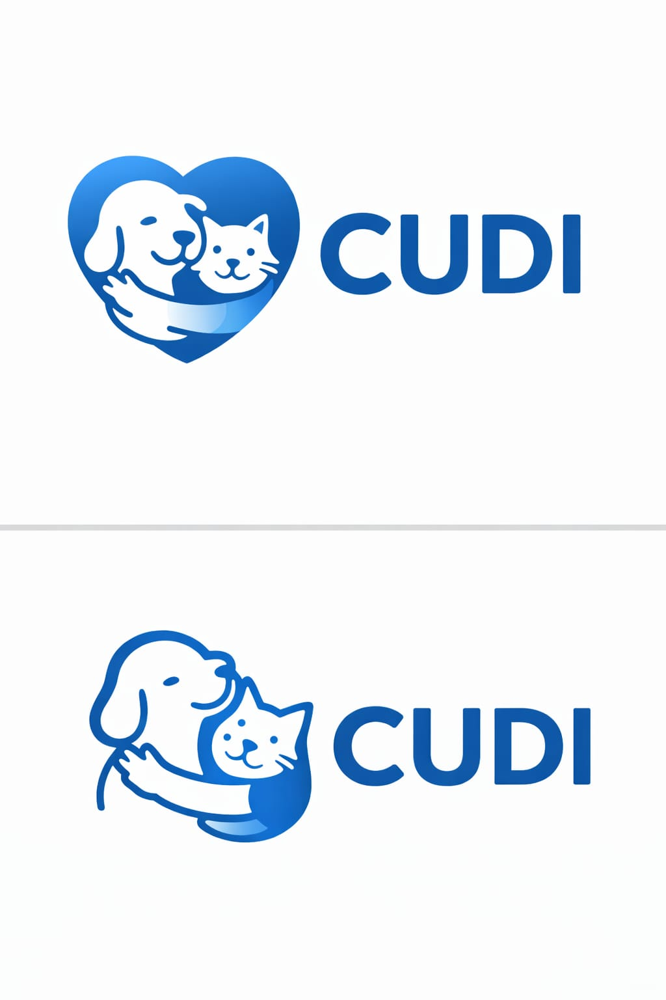
1.0.2.1 Una app para el bienestar integral de las mascotas.
1.0.3. Micaela Bernard
1.0.4. Alejandro Ospina
1.0.5. Melissa Paz
1.0.6. Camilo Cela
Este trabajo constituye el documento consolidado del Proyecto de Fin de Máster (TFM) del Máster de Administración de Negocios Digitales (E-Business & E-Commerce) - Curso 2025-26, que integra la Primera y la Segunda Entrega.
El proyecto presentado es Cudi, una plataforma integral diseñada para el bienestar de las mascotas. En este documento se presenta la Primera Entrega, que incluye el análisis del entorno (PESTEL, Matriz de Conclusiones), la validación del Job to be Done, la segmentación de cliente, la Propuesta de Valor detallada, la síntesis del Modelo de Negocio (Business Model Canvas) y las conclusiones de los Experimentos.
Adicionalmente, se presenta la Segunda Entrega, que abarca el Benchmarking Competitivo (Análisis Cuantitativo y Cualitativo de Competidores clave), la definición del Target Objetivo para el lanzamiento en Barcelona, la Determinación de Objetivos SMART (KPIs/KRIs esenciales para validar el modelo en el Año 1) y la Estrategia Digital completa (SEO, GEO, SEM, Social Ads e Influencer Marketing).
Como complemento a esta documentación escrita, se adjuntan a continuación los vídeos de sustentación del proyecto:
Enlace de la página web: CUDI | El Ecosistema Definitivo para el Bienestar Animal de Perros y Gatos
2. Vídeo de Sustentación de la Primera Entrega
2.0.1. https://youtu.be/3QaBc5m5iJo
3. Vídeo de Sustentación de la Segunda Entrega
3.0.1. https://youtu.be/G85s626WaeU?si=Hzv_iuHsdHNuyO6t
3.0.2. Tendencia
Humanización de la Mascota (Pet Humanization).
El mercado ha evolucionado; las mascotas ya no son propiedades, son miembros de la familia. Esto transforma el gasto en una inversión emocional, abriendo la puerta a servicios de alta calidad que antes no existían.
3.0.3. El Propósito
WHY: Facilitar el acceso al bienestar preventivo integral, promoviendo una vida más longeva para las mascotas y simplificando la experiencia de cuidado para los dueños.
3.1. Análisis del entorno
3.2. Matriz PESTEL
Factores políticos
Impulso regulatorio al bienestar animal: La reciente Ley de Bienestar Animal (Ley 7/2023) ha transformado el marco normativo nacional, estableciendo obligaciones estrictas para propietarios y empresas: seguro civil obligatorio para perros, registro e identificación, y control de la cría responsable. Además, los nuevos Reales Decretos en 2025 refuerzan estas exigencias con mayor control y sanciones por incumplimiento(Bolet├¡n Oficial del Estado, 2023; IPMARK, 2025; ModelosDePlanDeNegocios, 2025; Pacvue, 2025).
Fomento de la adopción y lucha contra el abandono: El Plan Estatal de Acción contra el Abandono de Animales de Compañía aprobado en 2025 promueve activamente la adopción y sanciona el abandono y la cría clandestina, lo que genera oportunidades para empresas alineadas con la ética y el bienestar animal[4].
Participación de las administraciones públicas: En España, la Ley 7/2023 atribuye a los Ayuntamientos y comunidades autónomas cuentan con competencias normativas en el control de animales, gestión de colonias felinas y definición de medidas económicas para protección animal. Aumenta, además, la presión social sobre la administración para mejorar los recursos destinados al sector[7][8].
Apoyo institucional e incentivos: En España, los programas oficiales de financiación vinculados al Plan de Recuperación, Transformación y Resiliencia (PRTR) y a los fondos europeos NextGenerationEU priorizan la digitalización empresarial, la sostenibilidad y la economía circular. Estas líneas de ayuda, junto con convocatorias autonómicas específicas para protección animal, pueden favorecer a empresas que innoven en ámbitos como la gestión sostenible de recursos, la digitalización de servicios y el desarrollo de soluciones tecnológicas aplicadas al bienestar animal [9][10][11].
Presión regulatoria europea: Se prevé que, en los próximos años, el desarrollo del reglamento europeo sobre bienestar de perros y gatos y la publicación del “Listado Positivo” de especies influirá directamente en la actividad del sector[4].
3.2.1. Factores económicos
Crecimiento sostenido del mercado: El sector de mascotas en España alcanzó en 2025 un volumen de negocio de 5.770 millones de euros, representando el 2,3% del PIB nacional y mostrando un crecimiento anual sostenido[2][12].
Demanda elástica y premiumización: El 61% de los hogares españoles posee al menos una mascota y el gasto medio anual supera los 1.000 €. La tendencia hacia la humanización impulsa la demanda de servicios y productos premium y personalizados, incluido el canal digital(ModelosDePlanDeNegocios, 2025; Pacvue, 2025).
Aumento de servicios digitales y e-commerce: La digitalización crece exponencialmente, con canales online superando los 555 millones de USD en ventas en 2023 y servicios como telemedicina, seguimiento GPS, planes nutricionales IA y suscripciones mensuales ganando peso(ModelosDePlanDeNegocios, 2025).
Presión inflacionaria y costes operativos: La inflación afecta tanto el precio de los alimentos como los servicios veterinarios y logísticos, impactando en la estructura de costes y la necesidad de innovación en modelos económicos, como planes de suscripción y programas de fidelización para amortiguar la volatilidad[7].
Efectos positivos en empleo y cadena de valor: El sector genera empleo directo e indirecto en veterinaria, tecnología y logística, y fomenta un ecosistema de alianzas con aseguradoras, clínicas, pet shops y startups [2][12].
Competencia creciente:El mercado de animales de compañía en España se caracteriza por un entorno altamente competitivo en el que operan grandes grupos internacionales (Nestlé Purina, Mars Petcare), cadenas de clínicas veterinarias, aseguradoras y un número creciente de startups digitales. Informes sectoriales como el de IPMARK (2025) subrayan que la diferenciación pasa por la hiper personalización de servicios, la interoperabilidad de datos y la integración de soluciones digitales(Animals Health, 2025; IPMARK, 2025).
3.2.2. Factores social:
Aumento de la “humanización” de las mascotas: Los dueños las consideran parte de la familia. Se observa un incremento del gasto en bienestar, estética, salud y entretenimiento y también, hay una alta disposición a pagar por servicios confiables. El 93% de los españoles considera a su mascota como miembro de la familia. [41]
Crecimiento del tiempo en apps y consumo digital: Los usuarios están acostumbrados a resolver todo desde el celular: delivery, taxis, limpieza, etc. También, las personas de generaciones Z y/o Millenials utilizan más de 5 aplicaciones de manera mensual. (Smartme Analytics, 2021)
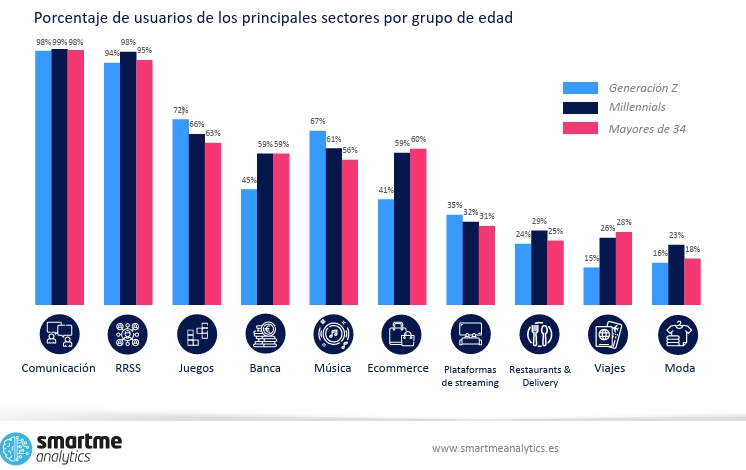
Cambios demográficos y estilo de vida en España: En España se observa un cambio demográfico relevante: según ANFAAC (2024), existen más de 20 millones de mascotas registradas, cifra que refleja la creciente presencia de animales de compañía en los hogares. Este fenómeno está directamente vinculado al aumento de personas que viven solas y parejas sin hijos, quienes recurren a la adopción de mascotas como fuente de compañía y apoyo emocional. [43]
Desconfianza y complicaciones en la búsqueda de paseadores: Existe una dificultad para encontrar paseadores confiables y con referencias. Las personas necesitan contar con reseñas, perfiles verificados, certificaciones, cobertura de seguro y demás, para contratar un servicio.
Tendencia creciente a la adopción responsable: Interés por entrenadores, etólogos, nutrición especializada. Servicios de guardería y bienestar mental para mascotas.
Comunidad pet lover muy activa: En redes sociales hay grupos enormes que comparten recomendaciones, problemas y experiencias. Potencial de marketing orgánico, embajadores y reviews.
Mayor sensibilidad hacia el bienestar animal: Servicios que garanticen seguridad, condiciones éticas, trato respetuoso y protocolos son mejor recibidos.
3.2.3. Factores tecnológicos:
Inteligencia Artificial y personalización; La IA generativa y predictiva está transformando la forma en que las aplicaciones recomiendan productos y servicios. En tu app, esto puede significar sugerir paseadores según el nivel de actividad de la mascota o anticipar necesidades de compra (alimentos, vacunas). La IA también se usa para optimizar precios dinámicos y mejorar la experiencia del cliente. (Avanza Previsi├│n, 2025)
Telemedicina veterinaria: La teleconsulta veterinaria está creciendo rápidamente. El mercado mundial de telemedicina veterinaria se valoró en USD 620 millones en 2024 y se espera que alcance USD 3.2 mil millones en 2034, con un crecimiento anual del 17.9%. Integrar este servicio en tu plataforma sería un diferenciador clave, ofreciendo consultas online seguras y recetas digitales. (Global Market Insights, s.f.)
Wearables e IoT para mascotas: El mercado global de pet tech está en auge: pasó de USD 12.7 mil millones en 2024 a una proyección de USD 41.3 mil millones en 2032, con un crecimiento anual del 15.9%. Collares GPS, monitores de actividad y comederos inteligentes permiten integraciones vía API que aportan valor añadido, como alertas de salud o rutas de paseo personalizadas. (Global Market Insights, s.f.)
Pagos digitales y comercio móvil: El m‑commerce representa más del 70% del e‑commerce global en 2025, impulsado por la adopción masiva de smartphones y wallets digitales. Para tu app, optimizar el checkout móvil y ofrecer pagos con Apple Pay, Google Pay o Bizum es crítico para aumentar la conversión y reducir fricción. (Puromarketing, 2025)
Ciberseguridad y confianza digital: La protección de datos personales y financieros es cada vez más relevante. La ciberseguridad se considera la primera línea de defensa en entornos digitales, y el cumplimiento de normativas como GDPR y la Ley Europea de Servicios Digitales (DSA) es obligatorio. Invertir en cifrado, autenticación multifactor y transparencia en políticas de datos es esencial para generar confianza. [33]
Accesibilidad digital: La European Accessibility Act entró en vigor el 28 de junio de 2025, obligando a que apps y webs sean accesibles para personas con discapacidad. Esto no solo evita sanciones, sino que amplía tu base de usuarios y mejora la reputación de la marca. [34]
3.2.4. Factores ecológicos:
Mayor conciencia ambiental en dueños de mascotas: Crece el interés por servicios y productos eco-friendly. Demanda creciente de paseos y actividades al aire libre en espacios verdes seguros. Preferencia por servicios que minimicen el impacto ambiental (bolsas compostables, transporte sostenible). (13)
Regulaciones ambientales sobre espacios públicos: Se desarrollaron distintas normas municipales tanto en la provincia de Barcelona como en España en sí. Algunas limitaciones son: zonas aptas para mascotas, playas dog-friendly, parques y áreas verdes habilitadas. Esto afecta cómo operan los paseadores y entrenadores.
Gestión responsable de residuos de mascotas: Relevancia creciente del manejo adecuado de heces y desechos.
Cambio climático y temperaturas extremas: Los arduos veranos limitan los paseos de las mascotas en determinadas franjas horarias para prevenir malestares o golpes de calor. Lo mismo sucede con los inviernos y sus bajas temperaturas. Las personas valoran explícitamente las alertas y sistemas de prevención respecto a tormentas, vientos, etc.
Tendencias en alimentación natural y elementos orgánicos: Se observa un aumento del interés por alimentos naturales, orgánicos, sustentables y sin químicos. Por otro lado, las personas valoran los embalajes sustentables, logísticas de baja huella de carbono y demás aspectos.
3.2.5. Factores Legales:
La Ley Rider (Real Decreto-ley 9/2021): En España obliga a que los repartidores de plataformas digitales sean considerados asalariados en lugar de falsos autónomos. Aunque nació enfocada en el reparto, su interpretación se extiende a cualquier plataforma que ejerza control algorítmico sobre sus trabajadores[6].
Impulso regulatorio al bienestar animal: La Ley de Bienestar Animal (Ley 7/2023) ha transformado el marco normativo nacional, estableciendo obligaciones estrictas para propietarios y empresas: seguro civil obligatorio para perros, registro e identificación, y control de la cría responsable. Además, los nuevos Reales Decretos en 2025 refuerzan estas exigencias con mayor control y sanciones por incumplimiento(Bolet├¡n Oficial del Estado, 2023; IPMARK, 2025; ModelosDePlanDeNegocios, 2025; Pacvue, 2025).
Protección de Datos y Privacidad Ley Orgánica 3/2018 (GDPR y LOPDGDD):Los datos de mascotas no están protegidos por el RGPD, pero los de sus dueños sí, y con alta sensibilidad si se cruzan con geolocalización o seguros. La comercialización de estos datos exige consentimiento expreso y está bajo la vigilancia estricta de la AEPD, que garantiza el derecho a impugnar decisiones automatizadas(Agencia Espa├▒ola de Protecci├│n de Datos, 2021; Bolet├¡n Oficial del Estado, 2018; Parlamento Europeo y Consejo de la Uni├│n Europea, 2016).
El RGPD (Reglamento UE 2016/679) y la LOPDGDD (Ley Orgánica 3/2018): regulan datos personales de personas físicas, no de animales. Indirectamente sí. Cuando la información veterinaria de una mascota (afecciones, historial clínico, medicación, enfermedades, citas) se vincula o permite inferir datos sobre el propietario, pasa a ser considerada dato personal sensible. Ejemplo: un historial de tratamientos caros puede revelar el nivel socioeconómico del dueño; una enfermedad zoonótica puede implicar riesgos de salud humana.(Agencia Espa├▒ola de Protecci├│n de Datos, 2021; Bolet├¡n Oficial del Estado, 2018; Parlamento Europeo y Consejo de la Uni├│n Europea, 2016).
Regulación de los datos de los paseadores de mascotas en España: están regulados principalmente por protección de datos, el RGPD y la LOPDGDD obligan a tratar su información personal (identidad, domicilio, historial laboral, geolocalización) con consentimiento explícito[13][14][15].
Ley 6/1993 de sanidad animal en Cataluña: Los servicios veterinarios en España requieren que los profesionales estén colegiados en el Consejo General de Colegios Veterinarios y que las clínicas cumplan la normativa sanitaria estatal y autonómica(Bolet├¡n Oficial del Estado, 2013; Bolet├¡n Oficial del Estado, 2023; Consejo General de Colegios Veterinarios de Espa├▒a, 2018; Generalitat de Catalunya, 1993).
El Real Decreto 53/2013: sobre protección de animales en experimentación, y el Real Decreto 3/2023, que regula la sanidad y protección animal. Además, cualquier colaboración con veterinarios debe formalizarse mediante contratos que definan responsabilidades, precios, comisiones y la gestión de posibles negligencias.[16][17][18][19].
Los veterinarios responden civilmente por negligencia o mala praxis bajo el Código Civil español y el Código Deontológico Veterinario.La práctica jurídica recomienda contar con seguro de responsabilidad civil profesional, aunque no está expresado como obligación en una ley única, sí es exigido por muchos colegios veterinarios como requisito de ejercicio.(Consejo General de Colegios Veterinarios de Espa├▒a, 2018; Ref 21).
3.2.6. Regulación de paseadores de perros
En Barcelona, la Ordenanza de Protección, Tenencia y Venta de Animales establece normas de bienestar animal y limita el número de perros por paseo (habitualmente máximo 4).
También exige que la actividad económica se declare (autónomo o empresa) y que se cumpla normativa de bienestar animal.
El seguro de responsabilidad civil no está en la ordenanza como obligación explícita, pero se recomienda y puede ser exigido por la administración en licencias o contratos privados.
Guarderías caninas en casa: Se consideran actividad económica y requieren alta como autónomo, licencia municipal y cumplimiento de normas de bienestar animal. En Barcelona, la Ordenanza de protección, tenencia y venta de animales regula el número de animales en domicilios y actividades económicas relacionadas.(Ayuntamiento de Barcelona, 2020)
La Ley 34/2002 de Servicios de la Sociedad de la Información (LSSI): obliga a aviso legal, política de cookies, condiciones de compra y derecho de desistimiento.Los medicamentos veterinarios solo pueden venderse por veterinarias, farmacias o establecimientos autorizados. La app puede intermediar si los contratos dejan claro que la responsabilidad recae en el proveedor.[25]
Los seguros solo pueden ofrecerse mediante aseguradoras registradas o como mediador autorizado.La app puede recibir comisión por pólizas si se alía con aseguradoras reguladas por la Dirección General de Seguros y Fondos de Pensiones (DGSFP).(Bolet├¡n Oficial del Estado, 2015; Ref 28)
3.2.6.1 Matriz de Conclusiones del Entorno (Síntesis de Oportunidades y Amenazas)
Esta matriz sintetiza las fuerzas externas que impactan al sector, identificando tanto las brechas de mercado explotables como los riesgos latentes que cualquier nuevo entrante debe mitigar.
3.3. Matriz de Competidores
3.3.1. Job to be done:
Cuando tengo una mascota a la que considero mi hijo pero mi vida laboral me deja sin tiempo, quiero un ecosistema único que gestione su salud, nutrición y bienestar con datos reales, para poder garantizar su longevidad y sentirme un padre/madre responsable sin sufrir ansiedad o culpa.
3.3.2. Segmento de cliente Target
3.3.3. B2C
Perfil Demográfico: 25 a 55 años. Este rango estratégico abarca a los Nativos Digitales (Gen Z y Millennials) y consolida a la Generación X digitalizada. Residentes en núcleos urbanos de Barcelona y del área metropolitana que viven en pisos y enfrentan restricciones de tiempo y espacio.
Nivel Socioeconómico: Medio-Alto, con capacidad de gasto recurrente (>1.000€ anuales en la mascota).
Perfil Psicográfico: Disponen de recursos económicos para ofrecer lo mejor a su mascota, pero carecen del tiempo necesario debido a sus exigentes rutinas laborales. Su dolor principal es la culpa parental y la ansiedad por desinformación. Sienten angustia al no saber si su mascota está bien cuidada cuando no están presentes y buscan mitigar la incertidumbre sobre su salud a largo plazo. Son usuarios Digital First que exigen inmediatez. No buscan un servicio logístico, buscan mitigar la incertidumbre sobre la salud y longevidad de su mascota.
3.3.4. Value Proposition Canvas
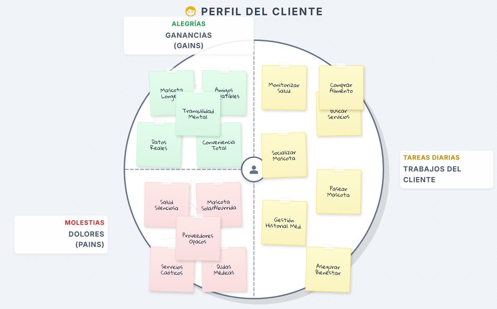
3.3.5. Aliviadores de frustración
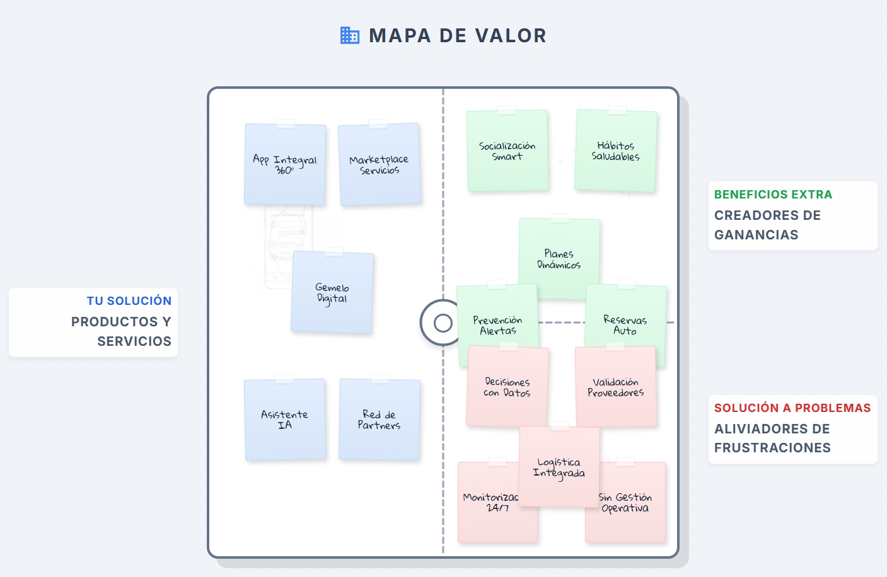
3.3.6. Propuesta de Valor
Una Plataforma Integral de Bienestar Animal diseñada para elevar la calidad de vida de las mascotas mediante la hiper-personalización de cuidados y la creación de Gemelos Digitales. La solución actúa como un asistente inteligente de toma de decisiones, centralizando la gestión de servicios y productos para facilitar la vida del propietario.
El modelo se estructura sobre tres ejes fundamentales:
3.3.7. Inteligencia de Datos y Monitorización
A través de dispositivos wearables de marca propia (incluidos en la suscripción Premium) y la información perfilada por el usuario (historial, raza, edad, etc), el sistema monitoriza en tiempo real indicadores de actividad, sueño y ubicación. Esta telemetría alimenta una Inteligencia Artificial que no suplanta al veterinario, sino que genera recomendaciones de hábitos saludables, sugiere ajustes nutricionales y emite alertas preventivas ante cambios de comportamiento, incentivando la visita profesional cuando los datos indican una desviación de la normalidad.
3.3.8. Ecosistema Conectado vía API
La plataforma funciona como un hub tecnológico que conecta al usuario con una red de proveedores externos válidos (veterinarias, aseguradoras, retailers de comida, paseadores, cuidadores y peluquerías). El sistema verifica disponibilidad, gestiona reservas y facilita la logística de compra de productos sugeridos, actuando como intermediario digital sin asumir la ejecución operativa ni médica de los servicios.
3.3.9. Experiencia Social y Fidelización
Aprovechando los datos de geolocalización y comportamiento, la plataforma introduce una capa de socialización inteligente, identificando interacciones positivas durante los paseos para sugerir nuevas conexiones y actividades conjuntas entre mascotas compatibles.
3.3.10. Actividades clave
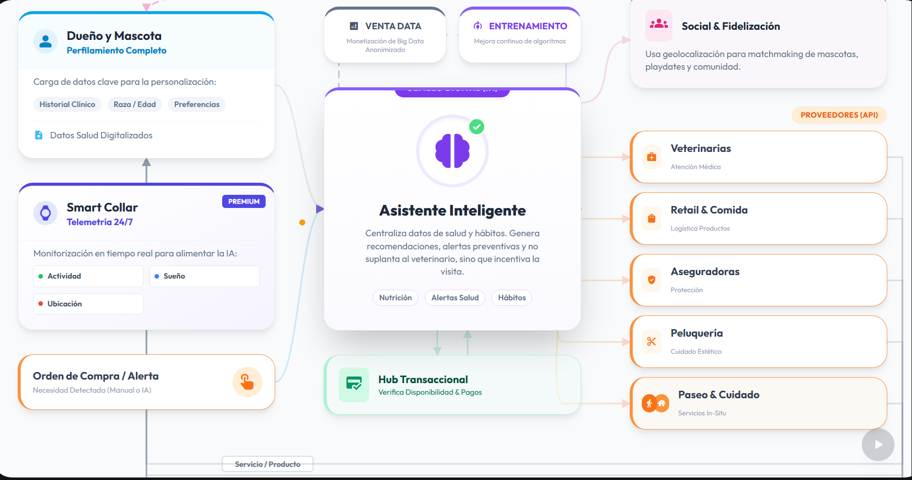
3.3.11. Flujo de ingresos
Tipos de suscripciones: En esta primera etapa planteamos ofrecer estos dos tipos de suscripciones para poder lograr el mayor alcance posible y conseguir clientes. Ya para un futuro pensamos ofrecer distintos tipo de suscripciones que se adapten a las distintas necesidades de los clientes.
Free: Tiene anuncios, puede crear el perfil de la mascota, se le notificará sobre las vacunas y debe pagar los servicios de forma individual.
Premium:
Collar con dispositivo gps
Hiper Personalización con IA
Descuentos en ciertos servicios
Chat veterinario 24/7: a modo de consulta y recomendaciones generales. Siempre que quieran tomar una decisión final consultar con un profesional
Un paseo de una hora
Acceso prioritario: para todos los servicios ofrecidos dentro de la app
Bases y condiciones - legales: El cliente va aceptar los términos y condiciones al suscribirse a la aplicación.
Comisiones por cada compra o reserva realizada en la plataforma
Publicidad dentro de la app
Comisión por cada servicio
Venta de datos de las mascotas
3.3.12. Modelo de Negocio (Business Model Canvas)
En el siguiente enlace, pueden apreciar cómo ha evolucionado este modelo a lo largo del proyecto, reflejando las iteraciones y aprendizajes clave. La imagen que se muestra a continuación presenta la configuración final del modelo de negocio de Cudi.
https://www.canva.com/design/DAG6APvh1DQ/5dzLiyosdHiQZzZI0MLuig/edit?utm_content=DAG6APvh1DQ&utm_campaign=designshare&utm_medium=link2&utm_source=sharebutton
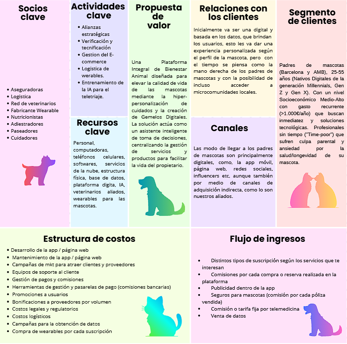
3.3.13. Suposiciones:
Creemos que nuestros clientes cuentan con un poder adquisitivo medio alto.
Creemos que nuestro cliente es generación Z y Millenials.
Creemos que nuestro cliente tiene poco tiempo para dedicar a su mascota.
Creemos que nuestro cliente no tiene hijos.
Creemos que nuestro cliente reside en departamentos pequeños y no tienen gran espacio para el esparcimiento de la mascota.
Creemos que nuestro cliente estaría dispuesto a hacer una inversión para su mascota.
Creemos que los partners van a sumarse al proyecto.
Creemos que nuestro cliente necesita o quiere una aplicación integral con los servicios necesarios para la mascota.
Creemos que nuestro cliente suele utilizar las redes sociales con gran frecuencia.
Creemos que nuestro cliente está dispuesto a cambiar sus hábitos de consumo de los alimentos / productos de mascotas.
Asumimos que nuestro cliente está dispuesto a pagar una suscripción o membresía por servicios premium de forma mensual.
Asumimos que nuestro cliente está interesado en obtener distintos planes de suscripción y elegir cuál es el indicado.
Asumimos que nuestro cliente confiaría su paseo en la aplicación.
Asumimos que nuestro cliente tendrá una relación a largo plazo con la aplicación (más de 5 años).
Asumimos que nuestro cliente realizará recomendaciones a conocidos y amigos para sumarse a la app.
Creemos que nuestra aplicación tiene un diferencial respecto a nuestra competencia
Asumimos que entendemos los costos del proyecto.
Creemos que vamos a ofrecer un servicio de alta calidad.
Asumimos que nuestros partners y aliados nos pagarán una comisión para ofrecer y vender su servicio.
Asumimos que los clientes elegirán los servicios de forma mensual, generando ingresos recurrentes.
Suponemos que a los clientes les gustaría tener un seguimiento constante de sus mascotas.
Asumimos que el cliente quiere una experiencia hiper personalizada de sus mascotas.
Categorías:
Deseabilidad: 1- 2- 3- 4- 5- 9 - 10 - 13 - 6 - 8 - 18 - 16 - 15 - 14 - 21 - 22
Viabilidad: 6 - 11 - 12 - 20 - 19
Factibilidad: 17 - 7
3.3.14. Mapa de suposiciones
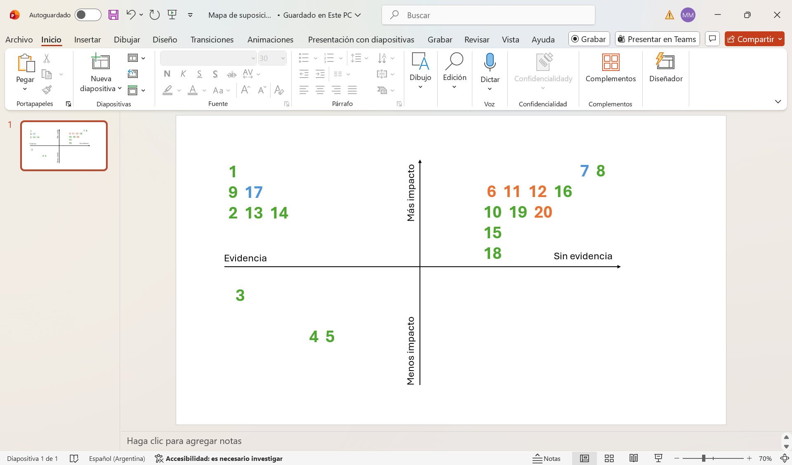
3.3.15. Conclusiones del Mapa de suposiciones
Para la validación experimental, se han priorizado las suposiciones 8, 11 y 19, dada su criticidad e importancia estratégica para el desarrollo y la gestión del proyecto.
3.3.16. Experimentos
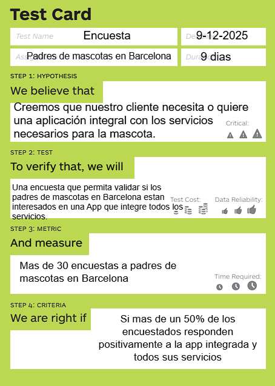
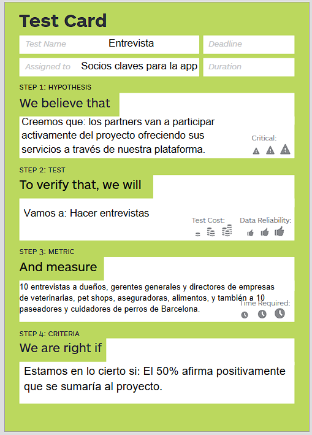
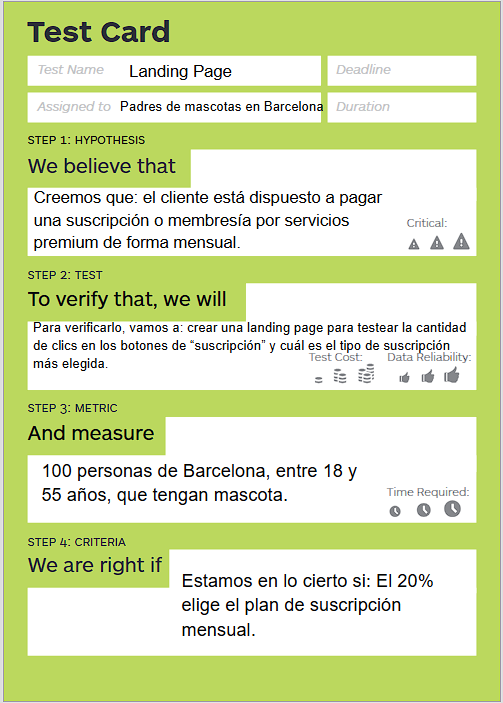
3.4. Análisis de la encuesta
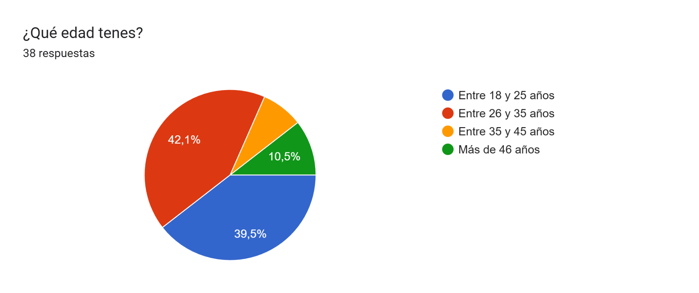
Se evidencia que el 81.6% de los encuestados tienen entre 18 y 35 años, lo que demuestra que los propietarios de mascotas en Barcelona son un público joven-adulto, las personas de este rango etario suele ser, tecnológicamente activos y, usuarios de aplicaciones en el móvil, por lo cual, una app que les brinde soluciones prácticas y digitales es muy atractiva para este nicho.
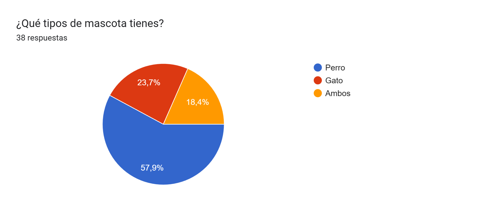
Según la encuesta, podemos analizar que la mayoría de personas en Barcelona tiene perro, también se evidencia los gatos tienen una presencia relevante aunque menor, por lo que en la app para mascotas se debe priorizar las funcionalidades para los perros, sin excluir a los gatos, debido a que hay varias personas tienen ambos o en ciertos casos varias mascotas, es importante que la app le permita a los dueños gestionar más de una mascota y adicional, que adapte los contenidos según el tipo de mascota para que la experiencia sea más personalizada.
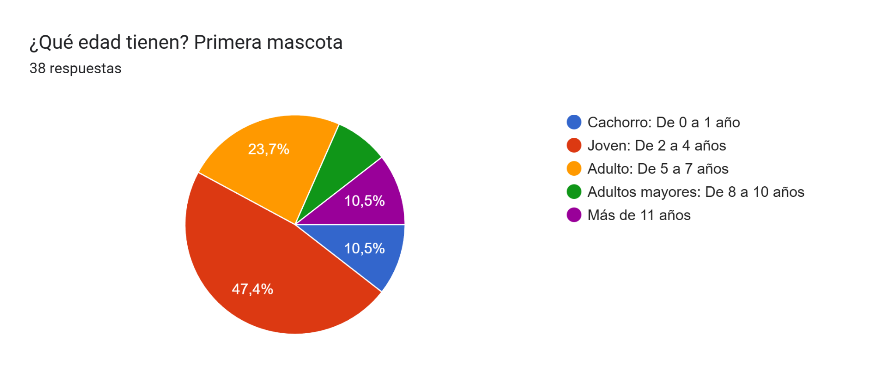
El 71.1% de las mascotas tienen de 2 a 7 años, aunque también hay adultos mayores, lo que implica que sus dueños tienen necesidades distintas para cada una (alimentación, salud, actividad, controles, etc) Por lo cual, las opciones dentro de la app deben ser variadas, para poder brindarle soluciones a todas las edades sin excepción.
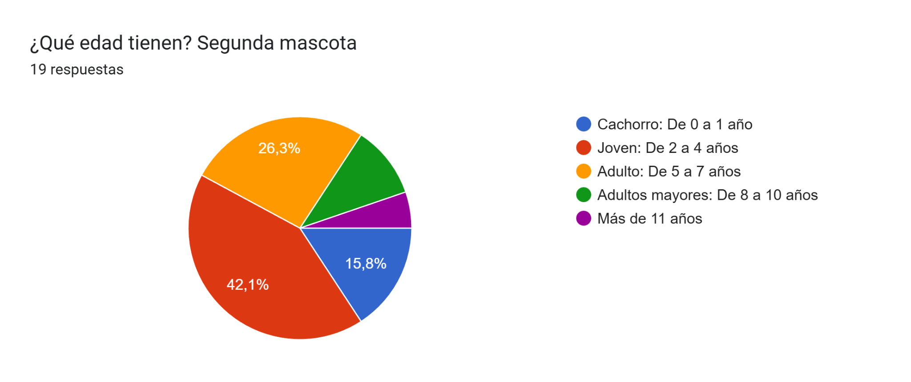
El 68,4 % de la segunda mascota de los propietarios en barcelona, son jóvenes y adultos entre 2 y 7 años. Esto quiere decir que la app debe incluir recomendaciones según la edad de la mascota, tales como, recordatorios veterinarios, planes de cuidado por la etapa de vida y consejos personalizados.
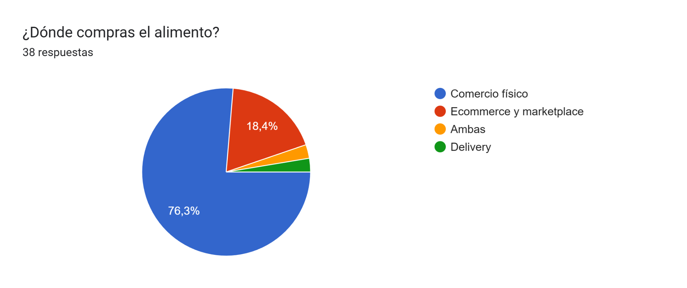
El 76.3 % de las personas compran el alimento en comercios físicos, esto puede indicar que los usuarios valoran la cercanía, la confianza en las tiendas habituales, la compra inmediata. A pesar de esto el ecommerce y marketplace también es utilizado por los usuarios por lo que para la app hay una oportunidad al integrar tiendas físicas locales y/o marcas reconocidas por los usuarios.
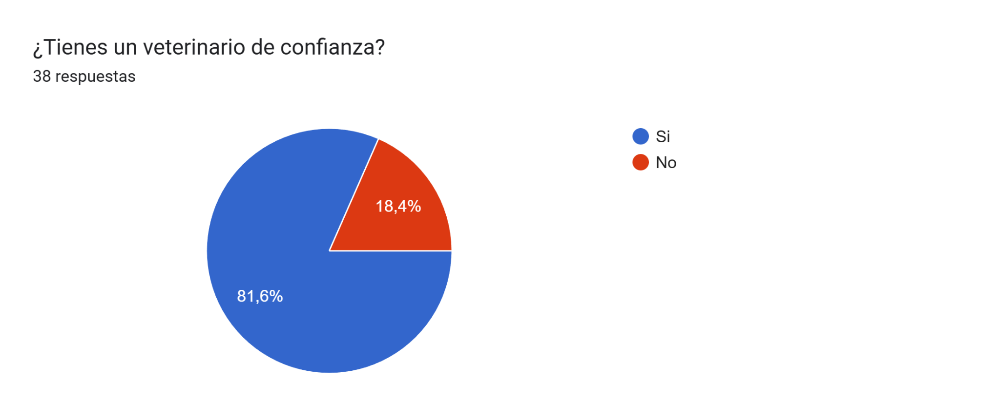
Aunque el 81,6% tienen un veterinario de confianza es importante que los servicios de veterinarios dentro de la app no deba percibirse como un reemplazo sino como un complemento, que además ofrece un canal de apoyo especializado para mascotas 24/7. Adicional, el 18,4% es un nicho que por medio de la app integrada podemos captar.
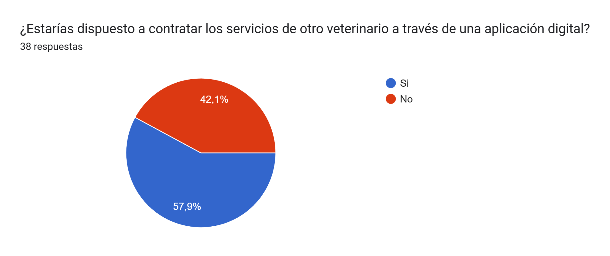
Aunque la mayoría tiene un veterinario de confianza aun hay personas que están abiertas a probar los servicios de un profesional a traves de nuestra app, esto indica que hay interés en segundas opciones, en caso de emergencias, también porque la app ofrece disponibilidad inmediata, telemedicina, etc. Para la app es una gran oportunidad para video-consultas, chat veterinario.
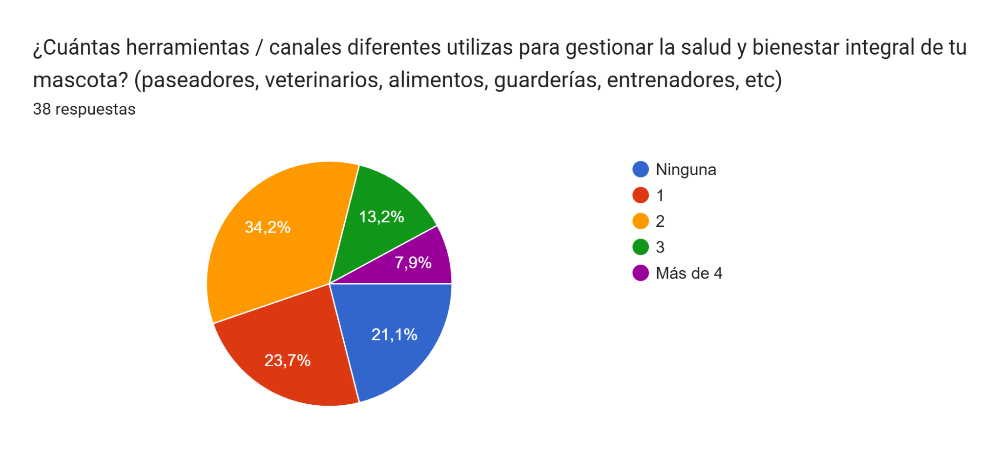
El 57,9 % de los dueños de mascotas en Barcelona usan al menos 1 o 2 apps para gestionar la salud y bienestar de sus mascotas, lo cual indica que hay una gran oportunidad para una app que integre todos los servicios en una.
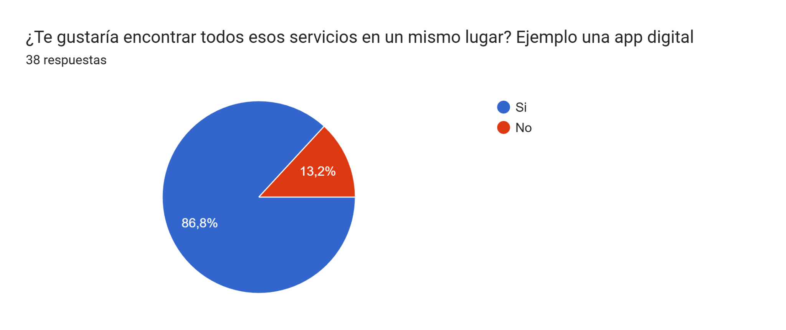
El 86,8% de los encuestados encuentran útil una app que integre todos estos servicios, por lo cual es una gran oportunidad para que las personas gestionen todas las necesidades de sus mascotas desde un mismo lugar, esto les brindaría, seguridad ya que habrán calificaciones y comentarios de otros usuarios respecto a cada servicio dentro de la app, confianza porque van a estar las tiendas y productos que ellos acostumbran y sobretodo comodidad al tener todo en uno,
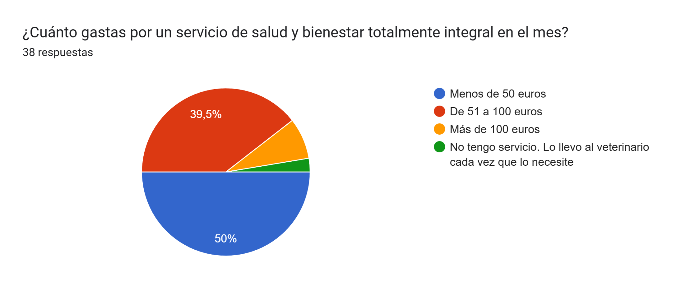
El 89.5% gasta hasta 100 euros mensuales en sus mascotas, por lo cual es un gasto que las personas ya tienen, lo que significa que no es un mercado virgen,esto muestra la importancia de que precio de la suscripción mensual esté por debajo de los 50 euros, para el plan base.
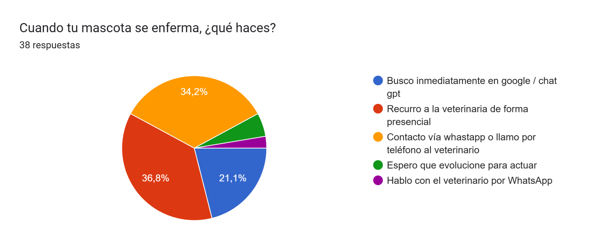
Más del 55,3 % de los encuestados buscan soluciones remotas o digitales inicialmente, ya que el usuario requiere rapidez, orientación y que le brinden tranquilidad, esto es una gran oportunidad para que la app se posicione como el primer paso antes de acudir a un veterinario, es por ello que la app debe tener un chat 24/7 en el que les den una orientación a los usuarios(IA + Veterinarios certificados), acceso a triaje veterinario digital.
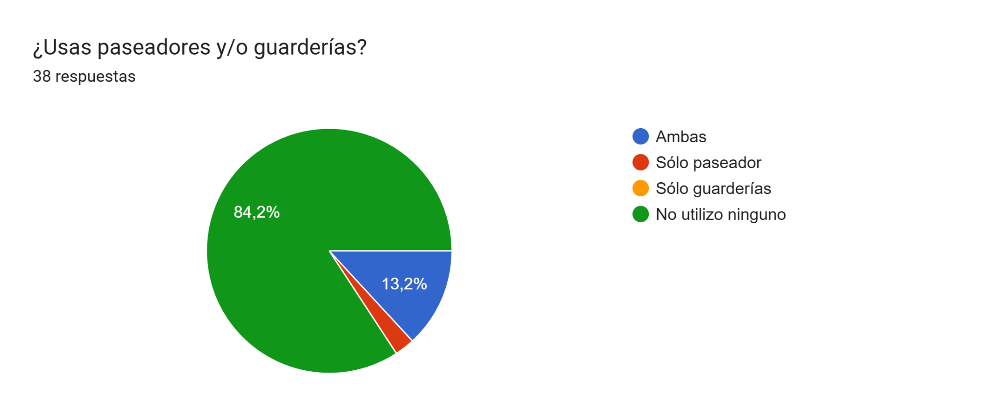
El 84,2% de los encuestados no hacen uso de los servicios de paseadores y guarderías, esto puede deberse a falta de confianza, precio, desconocimiento, baja necesidad lo que indica que este no podría ser el core del negocio inicialmente, sin embargo es algo que por medio de los comentarios, reseñas que otros usuarios dejen y el servicio de geolocalización, es posible que otros dueños de mascotas se animen a probar estos servicios de manera ocasional.
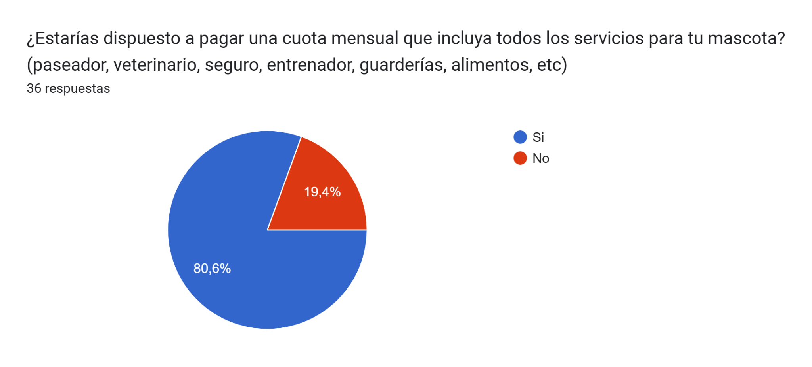
El 80.6% de los propietarios de mascotas en Barcelona estarían dispuestos a pagar una suscripción mensual para el bienestar integral de las mismas, este es un resultado muy positivo ya que confirma que la suscripción integral es atractiva y que para los usuarios es importante la comodidad, la centralización y la seguridad.
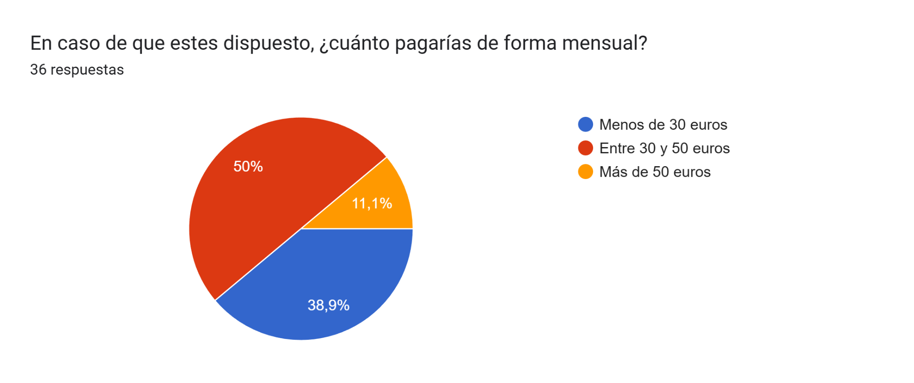
El 50 % de los encuestados indican que no pagarían más de 50 euros por una suscripción mensual, esta es una oportunidad para que la app obtenga diferentes comisiones y formas de ganar, ya que si se enfoca de manera freemium, las personas que no paguen la suscripción aún, puedan hacer uso del ecommerce y marketplace para los servicios de alimentación, higiene, medicamentos, etc puedan hacer sus compras independientes por medio de la app y que los planes de suscripción mensual para los planes básicos y premium no superen los 50 euros.
4. Entrega 2: TFM - Benchmarking, objetivos y estrategia digital
4.1. Análisis cuantitativo
4.1.1. Comercios on-line
| Web | MozRank (DA) | Metricspot | Pág. Indexadas | LinkPop | TikTok | YouTube | |||
|---|---|---|---|---|---|---|---|---|---|
| www.rover.com | 81 | 37,5 | 1540000 | 86 | 923000 | 713000 | 8898 | 85560 | 295000 |
| www.gudog.com | 50 | 53,3 | 14100 | 43 | 16000 | 10100 | 1510 | 403 | |
| www.barkibu.com | 45 | 41 | 623 | 56 | 498000 | 80200 | |||
| https://www.11pets.com/ | 37 | 54 | 1510 | 38 | 13000 | 1973 | |||
| https://es.holidog.com/ | 55 | 61 | 6290 | 60 | 15000000 | 22000 | |||
| https://petme.social/es | 24 | 39 | 73 | 13 | 1373 | 8471 | |||
| https://www.santevet.es/ | 39 | 500 | 48 | 253000 | 19800 | 30 | |||
| https://tractive.com/es/ | 61 | 62 | 4850 | 75 | 315000 | 339000 | 43800 | 14000 | 4360 |
| https://www.invoxia.com/ | 57 | 52 | 2190 | 60 | 11000 | 486 | 4665 | 538 |
4.1.1.1 Comercios on-line Multimarca locales ( e-distributors)
| Web | MozRank (DA) | Pág. Indexadas | LinkPop | Youtube | X | TikTok | |||
|---|---|---|---|---|---|---|---|---|---|
| https://www.kiwoko.com/ | 55 | 26600 | 60 | 193000 | 116000 | 51500 | 7358 | 25700 | 19370 |
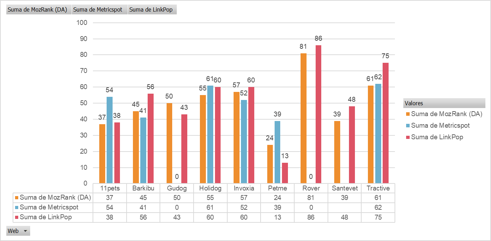
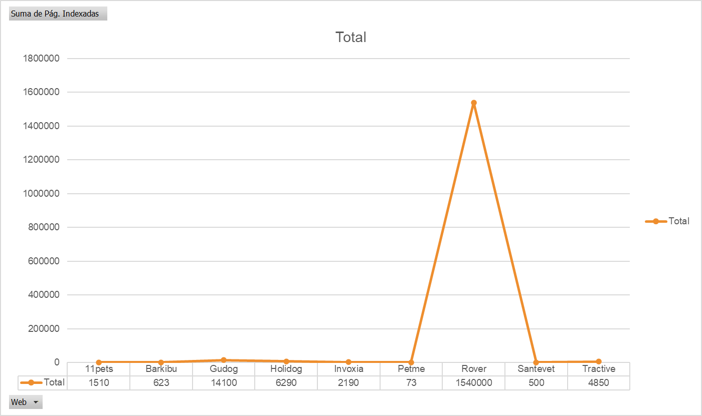
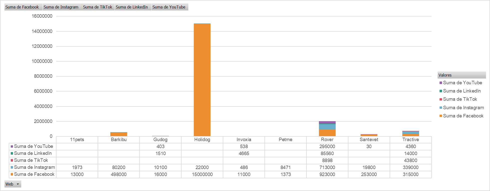
4.2. Conclusiones Estratégicas del Análisis Cuantitativo
El análisis de visibilidad, autoridad y presencia social de los competidores arroja tres conclusiones fundamentales que determinan la estrategia de entrada al mercado de CUDI:
1. Al analizar la métrica de páginas indexadas, se evidencia un dominio absoluto de Rover, con más de 1,5 millones de resultados en Google. Este volumen se debe a su modelo de agregador de perfiles de paseadores individuales.
2. La Autoridad Digital reside en la Tecnología y el Nicho En la métrica de Autoridad de Dominio (MozRank), se observó que empresas con un fuerte componente tecnológico o nicho médico, como Tractive (DA 61) o Barkibu (DA 45), superan o igualan a plataformas generalistas con mucho más contenido.
3. El claro uso de Facebook como la principal red social usada por todos los competidores.
4.3. Análisis cualitativo-tabla
4.3.1. Rover
4.3.1.1 Target prioritario
Dueños de perro/gato en zonas urbanas y suburbanas, de entre 25 y 50 años, con un estilo de vida activo, ya que son profesionales ocupados, viajeros frecuentes, millennials/Gen Z que tratan a sus mascotas como familia y están dispuestos a pagar por servicios personalizados, priorizando el bienestar emocional de su mascota y busca una alternativa más afectuosa y flexible a las guarderías tradicionales.
4.3.1.2. Target secundario: cuidadores y paseadores que usan Rover para ofrecer servicios y ganar dinero.
4.3.1.3 Formas de pago
Rover utiliza la pasarela de pagos Stripe y acepta las principales tarjetas bancarias: Visa, Mastercard, American Express y Discover. Apple Pay / Google Pay
4.3.1.4 Política de cancelación
Cada cuidador elige la política de cancelación que se aplicará si decides cancelar. Esto significa que la cantidad de reembolso depende de esa política y de cuándo canceles. Tipos de políticas de cancelación. Los cuidadores pueden elegir entre varias opciones comunes
Mismo día Reembolso completo si cancelas antes de que comience la reserva. Si cancelas una vez iniciado el servicio, se reembolsa el 50 %
Para paseos, guardería o visitas, usualmente se reembolsa íntegro si cancelas antes de comenzar.
Un día antes de la reserva Reembolso completo si cancelas antes de las 12:00 h del día anterior al inicio de la reserva. Si cancelas después de esa hora, normalmente se da 50 %
Tres días / Siete días Reembolso total si cancelas antes de las 12:00 h, tres o siete días antes de la fecha de inicio. Cancelando más tarde, se aplica 50 %
4.3.1.5 Rango de precios
Servicios de Alojamiento (Noche) Es el servicio principal (el perro se queda en casa del cuidador). Rango estándar: Entre 15 € y 30 € por noche.
Cuidadores Premium/Alta demanda: Pueden llegar a los 35 € - 45 € por noche (suelen ser cuidadores con cientos de reseñas positivas o formación específica).
Suplementos: Las tarifas suelen subir en Navidades, Semana Santa o agosto. También hay un cargo extra por "cachorros" (menos de 1 año).
Paseos de perros (30 minutos) Rango estándar: Entre 8 € y 15 € por paseo. La mayoría de cuidadores ofrecen descuentos si contratas paseos recurrentes (varios días a la semana).
Guardería de Día:
El perro pasa el día en casa del cuidador (sin pernoctar), ideal para gente que trabaja. Rango estándar: Entre 12 € y 22 € por día.
Cuidado a domicilio y Visitas a domicilio
El cuidador va a tu casa (servicio muy usado para gatos). Visitas (30 min): Entre 10 € y 18 € por visita.
Cuidado en casa del dueño: Es el servicio más caro, entre 25 € y 50 € por noche.
4.3.1.6 Redes sociales
El contenido de Rover.com en sus redes sociales (Instagram, Facebook, TikTok y Twitter/X) está muy enfocado en crear una comunidad emocional y educativa para los amantes de las mascotas. No se limitan a vender el servicio, sino que buscan ser un referente en el estilo de vida "pet-friendly". Fotos y vídeos de cuidadores: Imágenes reales de perros y gatos durante sus estancias (jugando, durmiendo en posiciones graciosas o paseando). Principalmente basado en:
Historias de éxito
Hashtags de comunidad Guías de salud
Adiestramiento
Curiosidades
Campañas de adopción
Alertas estacionales
Explicar la Garantía que ofrece Rover
4.3.1.7 Tipos de promociones
1. Descuento de Bienvenida (Primera Reserva) El descuento suele ser de 10 € (a veces sube a 20 € en campañas especiales).
Programa de Referidos (10 € para cada uno ) Este sistema permite acumular crédito para futuras reservas invitando a otros dueños de mascotas.Para el amigo: Recibe 10 € de descuento directo en su primera estancia o paseo al registrarte con tu enlace.
Programa de Referidos para Cuidadores Si recomiendas a alguien para que se convierte en cuidador profesional en la plataforma:Incentivo: Rover ofrece una tarjeta regalo de 10€
Descuentos por "Multimascota" Aunque no es un código promocional como tal, es una reducción de precio estructural muy importante: Configuración: La mayoría de los cuidadores en Rover aplican una tarifa reducida para la segunda o tercera mascota del mismo dueño.
Crédito por Cancelaciones del Cuidador (Protección Rover) Esta es una promoción "de seguridad": Si un cuidador te cancela una reserva a última hora (menos de 7 días antes), Rover a veces proporciona un cupón de unos 20 € para ayudarte a cubrir la diferencia de precio que pueda suponer contratar a un nuevo cuidador de urgencia.
Ofertas de "Larga Estancia" y Precios Especiales Los cuidadores tienen una herramienta manual para ofrecerte descuentos que no verás públicos: Tarifas personalizadas: Si necesitas alojamiento por más de una semana, puedes enviarle un mensaje al cuidador. Ellos pueden editar la reserva y aplicar un descuento por estancia larga manualmente antes de que aceptes el pago.
4.3.2. Gudog
4.3.2.1 Target prioritario
Propietarios de perros con un nivel adquisitivo medio-alto, digitalizado y con un vínculo emocional muy fuerte con su mascota, que busca una alternativa de cuidado humana, local y segura.
4.3.2.2. Target secundario: Cuidadores de perros que utilizan la plataforma para ofrecer servicios y generar ingresos.
4.3.2.3 Formas de pago
Visa, Mastercard, American Express
4.3.3. Politica de cancelacion
Cancelación por parte del Dueño: El reembolso depende exclusivamente de la antelación con la que canceles la reserva confirmada:
Más de 72 horas antes:: Recibes un reembolso del 100% del importe total de la reserva.
Menos de 72 horas antes: Se te devuelve el importe pagado excepto: 1. La comisión de gestión de Gudog. 2. El 50% del importe que iba a recibir el cuidador (como compensación por el tiempo bloqueado).
Una vez iniciada la reserva: No hay reembolso. Si decides recoger a tu perro antes de tiempo por motivos personales, el cuidador cobrará la estancia completa y no se devuelve dinero.
4.3.3.1 Rango de precios
Alojamiento (Noche completa) Es el servicio donde el perro duerme en casa del cuidador.
Rango estándar: Entre 15 € y 25 € por noche. Precio medio: Se sitúa en los 21 € por noche en ciudades como Madrid, Barcelona o Valencia. Es posible encontrar cuidadores con tarifas económicas desde 10 € por noche en zonas menos céntricas.
Guardería de día: El perro pasa el día con el cuidador pero duerme en su propia casa. Rango estándar: Entre 12 € y 20 € por día. Precio medio: Aproximadamente 16 € al día.
Paseos (1 hora) A diferencia de otras plataformas que ofrecen paseos de 30 minutos, en Gudog el estándar suele ser 1 hora de paseo. Rango estándar: Entre 8 € y 15 € por paseo. Precio medio: Unos 11 € o 12 € por cada salida.
4.3.3.2 Redes sociales
El contenido de Gudog en redes sociales se caracteriza por ser muy visual, cercano y centrado exclusivamente en el bienestar canino. A diferencia de competidores más globales, Gudog explota mucho su identidad como "comunidad de amantes de los perros" en Europa y está basado en:
Contenido Educativo Salud y Alimentación
Comportamiento y Educación
Curiosidades por Razas
Confianza y Transparencia
Fotos de estancias reales
Reseñas de clientes
Spotlight de Cuidadores: Presentan a cuidadores destacados de su comunidad, humanizando la plataforma y mostrando quiénes están detrás de los perfiles.
Entretenimiento
Preguntas en Stories
4.3.4. Tipos de promoción:
Código de Descuento para la Primera Reserva: Es un descuento directo de 5 € en tu primera reserva.
Programa de Referidos ("Invita a un amigo") Para el nuevo usuario: Recibe 5 € de descuento al usar el código de invitación de un amigo para su primera reserva. Para el que invita: Una vez que tu amigo completa su reserva, tú recibes un crédito de 5 €.
Descuento por Segunda Mascota Si tienes más de un perro, esta es la "promoción" automática más valiosa. El descuento: La gran mayoría de los cuidadores aplican un 50% de descuento sobre la tarifa base para el segundo perro de la misma familia.
Promociones Estacionales (Códigos "Flash") Ocasionalmente, Gudog lanza campañas específicas a través de sus redes sociales o newsletter.
Tipo de ahorro: Suelen ser códigos del 10% o 15% de descuento (como los códigos tipo SUMMER2026 o HALLOWEEN).
4.3.5. 11pets
4.3.5.1 Target prioritario
Se dirige tanto a familias con mascotas como a profesionales del sector pet-care. Ofrece dos versiones: 11pets: Pet Care para dueños de mascotas y 11pets: Business para empresas (veterinarios, peluqueros, refugios, entrenadores, paseadores, guarderías, etc.). Por tanto, su público incluye pet lovers que quieren organizar la salud de sus animales y negocios de cuidado de mascotas que buscan gestionar citas, historias clínicas y agenda.
4.3.5.2 Formas de pago
Visa, Mastercard, American Express, Google Pay, Apple Pay
4.3.5.3 Política de cancelación
Al ser un servicio por suscripción, 11pets no ofrece devoluciones prorrateadas por cancelación anticipada. De hecho, sus términos establecen que al terminar el contrato “no se reembolsará importes de períodos parciales”. Es decir, si el usuario da de baja la renovación automática, conserva el acceso hasta el fin del periodo contratado, pero no recibe crédito ni reembolso por el resto.
4.3.5.4 Rango de precios (Apps de Mascotas)
11pets funciona con un modelo freemium: el producto básico es gratuito para familias y refugios, mientras que los profesionales pagan suscripciones mensuales o anuales. En las Condiciones de uso se indica que “productos para familias y refugios de animales son ofrecidos sin cargo” y “productos para profesionales están sujetos a suscripción”. Los precios exactos no se muestran públicamente; solo se invita a registrarse para elegir el plan. Según el sitio de un socio, la suscripción anual puede pagarse en un único abono, por ejemplo 108 € por 12 meses, lo que equivaldría a 9 €/mes, o pagos similares por 3 o 6 meses (estos precios corresponden a Holidog, pero dan una idea de magnitud). En 11pets, el plan Premium desbloquea “50+ funciones” avanzadas como recordatorios veterinarios, historias clínicas y administración de varias mascotas
4.3.5.5 Redes sociales
11pets mantiene perfiles de Facebook e Instagram (en inglés mayormente). Sus publicaciones son sobre cuidado de mascotas, consejos y testimonios de usuarios. Por ejemplo, en la App Store se destaca que es “la plataforma digital más avanzada para el cuidado de tus mascotas”, enfatizando su comunidad global de entusiastas de animales. Su tono es profesional y didáctico.
4.3.5.6 Tipos de promociones
11pets suele ofrecer 30 días de prueba gratuita de la versión completa sin compromiso. Además, algunos distribuidores o colaboraciones promocionan descuentos. Por ejemplo, un blog español anunciaba un código promocional de 20 % de descuento en el primer año usando el código
4.3.6. Petme
4.3.6.1 Target prioritario
Su público objetivo incluye dueños de perros y gatos que demandan flexibilidad, y cuidadores ocasionales que buscan ingresos extra. Resalta que cualquiera que ame a los animales puede unirse tras pasar una verificación.
4.3.6.2 Formas de pago
Para el cliente las opciones son tarjeta de crédito/débito (y la app gestiona el pago), mientras que el cuidador recibe el pago neto a través de Stripe (transferencia a su cuenta bancaria).
4.3.6.3 Política de cancelación
La gestión de cancelaciones es uno de los pilares de la confianza en la plataforma. Petme establece reglas claras para la devolución de fondos cuando una reserva no se completa según lo previsto. Si una cancelación ocurre durante el transcurso de un servicio de alojamiento o cuidado en casa, la distribución de los fondos se realiza bajo el siguiente esquema: el propietario recibe el 100% de las tarifas correspondientes a los días no utilizados, más el 50% de las tarifas por el tiempo ya completado, mientras que el cuidador retiene el 50% restante del tiempo transcurrido
4.3.6.4 Rango de precios (Apps de Mascotas)
Visita corta (30 min) :entre 16 y 32€ Cuidado Diurno:entre 32 y 65€ Alojamiento nocturno: entre 50 y 85€
4.3.6.5 Redes sociales
Instagram y TikTok: Utilizadas para compartir contenido visual, historias de éxito de cuidadores y consejos rápidos de bienestar animal.
Facebook y X (Twitter): Canales para actualizaciones corporativas, soporte al cliente y discusión de políticas de la comunidad.
LinkedIn: Orientada a la red profesional de negocios de mascotas y alianzas estratégica
4.3.6.6 Tipos de promociones
PetMe destaca ventajas para usuarios nuevos, aunque no publica abiertamente cupones de descuento. En su web de “Cómo comenzar”, promociona comisiones reducidas y hasta 5 % de cashback para cuidadores destacados. Asimismo, su plan de protección cubre hasta 20.000 € en gastos veterinarios, presentado como beneficio extra. No hay ofertas de precio fijas mostradas; su gancho principal es la tarifa de servicio baja (15 %) y recompensas al ganar más (reduciéndose al 10 %)
4.3.7. Holidog
4.3.7.1 Target prioritario
El público son principalmente dueños de perros y gatos que trabajan o viajan, y buscan dejar a sus mascotas en buenas manos. También atrae a personas que quieren ofrecerse como cuidadores
4.3.7.2 Formas de pago
Visa, Mastercard, American Express
4.3.8. Politicas de cancelacion:
Las suscripciones se renuevan automáticamente al final del periodo contratado; el usuario puede cancelar en cualquier momento desde su perfil. No se mencionan reembolsos prorrateados: si se da de baja, lo habitual es que se mantenga el acceso hasta el fin del periodo pagado, sin devolución del saldo restante. En casos de cobros no deseados o incidencias, Holidog indica que se debe escribir al departamento de reclamaciones (ana@holidog.com) para solicitar reembolso o aclaración.
4.3.8.1 Rango de precios:
Holidog funciona con suscripciones de acceso ilimitado que permiten realizar reservas sin comisión. Hay tres planes principales (España):
Ocasional (3 meses ilimitados): 57 € al contratarlo (equivale a 19 €/mes).
Viajero habitual (6 meses ilimitados): 84 € total (14 €/mes).
Business VIP (12 meses ilimitados): 108 € total (9 €/mes).
La tarifa que paga finalmente el usuario por día de cuidado la fija el propio cuidador (en España ronda ~7 € al día, según indican). Por tanto, el cliente sólo abona la suscripción a Holidog; el pago al cuidador se hace aparte (a menudo en efectivo) al concluir el servicio.
4.3.8.2 Redes sociales
Holidog tiene una presencia muy activa en redes, especialmente Facebook e Instagram. Publica con frecuencia fotos y vídeos de perros y gatos cuidados por sus familias anfitrionas, así como promociones y testimonios reales de usuarios satisfechos (con tono cercano, emotivo). También comparte artículos de blog sobre cuidados de mascotas. En redes emplea un tono cariñoso y confiable, destacando la seguridad y el cariño del servicio
4.3.9. Tipos de promoción
Holidog ofrece campañas puntuales de descuento en las suscripciones. Actualmente hay una oferta del 50 % en planes de membresía: por ejemplo, un plan de 3 meses pasa de 19 €/mes a 9,50 €/mes. En esa promoción, las tarifas quedan en 9,50 €/mes (3 meses), 14 €/mes (6 meses) y 9 €/mes (12 meses), cada una con pago único al inicio. Además, Holidog promociona su “Garantía Holivet”: cubre gastos veterinarios hasta 500 € para los miembros VIP, gratis para ellos y opcional (4,90 €) para no VIP. No suele haber cupones de uso puntual, sino descuentos temporales en las cuotas de membresía.
4.3.10. Santevet
4.3.10.1 Target prioritario
Propietarios urbanos que integran a sus mascotas en el núcleo familiar, posicionando el seguro no como un gasto, sino como una garantía de acceso a servicios veterinarios costosos en entornos de alto riesgo. Para asegurar la rentabilidad a largo plazo, la compañía prioriza la captación temprana de cachorros y gatitos (menores de 12 meses) mediante programas como la promoción JUNIOR. Al asegurar a los animales desde los dos meses de edad, la entidad evita las exclusiones por enfermedades preexistentes y logra una fidelización vitalicia, acompañando la salud del animal durante todo su ciclo de vida.
4.3.10.2 Formas de pago
Tarjeta de Crédito y Débito: Utilizando la plataforma de pago segura Stripe.
Domiciliación Bancaria (SEPA): Es el método estándar para la continuidad de las pólizas anuales, permitiendo al usuario gestionar sus cuotas sin intervenciones manuales recurrentes.
4.3.11. Politicas de cancelacion
El contrato se renueva automáticamente cada año por acuerdo tácito
Periodo de desistimiento: 14 días desde la fecha de suscripción sin coste alguno y sin especificar motivo
Rescisión después del periodo inicial:
Para nuevas pólizas: 14 días para desistir del contrato
Después de este periodo: Deberás indicar tu deseo de rescisión al menos un mes antes de la fecha de renovación de tu póliza
La solicitud debe enviarse a través del formulario disponible en el Espacio Cliente, en la sección "Cuenta" → "Enviar un documento"
Casos en que también se puede rescindir: Defunción de la mascota, Fallecimiento del titular del contrato, Traslado de la mascota, Traslado al extranjero, Si la mascota se ha extraviado, Cesión de la mascota (cambio de propietario), Aumento de la cuota (se encuentran todos los motivos de anulación en las Disposiciones Generales)
4.3.11.1 Rango de precios
Este seguro de mascotas ofrece diversas modalidades de cobertura ajustadas según el tipo de animal: para perros, existen los planes Light (50%), Confort (70%) y Premium (90%), con límites anuales de hasta 5.000€, bonos de prevención de hasta 90€ y franquicias que varían entre 20€ y 70€. En el caso de los gatos, se mantienen estas mismas tres categorías con idénticas condiciones, pero se añade la modalidad exclusiva Cat Indoor, que ofrece una cobertura del 90% con un límite anual de 2.000€, un bono de prevención de 70€ y una franquicia de 50€.
4.3.11.2 Redes sociales
La marca no utiliza sus redes sólo como escaparate publicitario, sino como plataforma de educación sanitaria, lo que refuerza su autoridad en el sector.
YouTube: Utilizado para explicar conceptos complejos como los periodos de carencia o cómo funciona el bono de prevención a través de tutoriales claros.
TikTok e Instagram: La presencia de píxeles de seguimiento de estas redes en su web indica una fuerte inversión en campañas de "awareness" y "retargeting" visual.
Blog de Salud Animal: Publican contenido técnico sobre enfermedades caninas y felinas, lo que les permite captar tráfico de búsqueda orgánica de propietarios preocupados por síntomas específicos.
4.3.12. Tipos de promoción
La estrategia de crecimiento de Santévet se basa en reducir las barreras de entrada y maximizar el valor de vida del cliente mediante incentivos económicos directos. A través del Festival de Recomendaciones, la marca fomenta la adquisición orgánica otorgando 50 € al recomendador y 2 meses gratis al referido, optimizando así el costo de adquisición. Esto se refuerza con un Bono de Prevención anual (de 70 € a 90 €), que permite recuperar parte de la prima desde el primer día en gastos de veterinaria básica, generando una percepción de ahorro real inmediato. Finalmente, la Promoción Multimascota asegura la lealtad a largo plazo al devolver la penúltima cuota anual por cada animal adicional, incentivando la protección integral del hogar bajo una estructura de beneficios recurrentes.
4.3.13. Tractive
4.3.13.1 Target prioritario
El público objetivo de Tractive se divide en cuatro perfiles estratégicos que ven en la tecnología un seguro de vida y bienestar para sus mascotas. Destaca el propietario de perros activos, que depende del LIVE Tracking y las Vallas Virtuales para prevenir extravíos en entornos naturales, y el dueño de gatos de exterior, que utiliza el dispositivo CAT Mini (25g) para mitigar la ansiedad y monitorear el territorio. Por otro lado, emerge el monitor de bienestar, un usuario proactivo que emplea sensores de frecuencia cardíaca, sueño e IA para la detección temprana de patologías. Finalmente, el perfil tecnófilo urbano aprovecha la alta valoración de la app (4.7) para gamificar la actividad física, compitiendo en rankings de fitness y compartiendo datos en redes sociales, consolidando al dispositivo como una herramienta de estilo de vida digital
4.3.13.2 Formas de pago
Visa, Mastercard, American Express, Apple pay, Gooogle pay, PayPal, Klarna, Diners Club, Discover
4.3.13.3 Política de cancelación
El marco regulatorio de Tractive combina el cumplimiento de la normativa de la UE con una sólida garantía de satisfacción de 30 días que permite el reembolso íntegro tanto del hardware como de la suscripción, ideal para probar la cobertura móvil local. En cuanto al hardware, la cancelación es inmediata solo antes del procesamiento; de lo contrario, debe tramitarse como devolución en el citado plazo de 30 días, incluyendo cualquier regalo promocional. Respecto a las suscripciones, si bien no se emiten reembolsos parciales tras el primer mes, el usuario mantiene el servicio activo hasta el final del periodo contratado o puede optar por la pausa temporal del plan, ofreciendo flexibilidad frente a periodos de inactividad sin perder la inversión realizada
4.3.13.4 Redes sociales
La estrategia digital de Tractive trasciende la publicidad convencional al posicionar sus redes sociales como un ecosistema híbrido de atención al cliente, educación y "social proof". Mientras que Instagram y Facebook se nutren de contenido generado por el usuario (UGC) y consejos de salud, TikTok captura la atención de un público joven mediante aventuras reales y YouTube centraliza la formación técnica con tutoriales detallados. Esta presencia se profesionaliza en LinkedIn y se vuelve técnica en Reddit, donde la comunidad discute actualizaciones de firmware y rendimiento. Todo este tráfico converge en un blog estratégico de Inbound Marketing que, mediante historias reales de rescates en situaciones límite, transforma la necesidad emocional en una decisión de compra racional, reforzando la utilidad del dispositivo ante peligros inminentes.
4.3.13.5 Tipos de promociones
Tractive utiliza un sistema de incentivos multicanal diseñado para fomentar la viralidad y acelerar la conversión. Su programa de referidos crea un círculo virtuoso al otorgar un 30% de descuento al nuevo cliente y 2 meses de suscripción gratis al recomendador, lo que incentiva el crecimiento orgánico. Para la captación de leads, la marca ofrece un 30% de descuento inmediato al suscribirse al newsletter, mientras que las promociones estacionales (como San Valentín) alcanzan rebajas de hasta el 50% en dispositivos para gatos. Finalmente, la marca refuerza su credibilidad emocional a través de embajadores como Dani Rovira y premia la retroalimentación de los usuarios con descuentos del 20% en encuestas post-interacción, consolidando una comunidad activa y comprometida.
4.3.14. Invoxia
4.3.14.1 Target prioritario
La estrategia de Invoxia se basa en comercializar "tranquilidad" a través de una diversificación que abarca desde la seguridad patrimonial hasta la salud biométrica. Su target principal incluye al propietario urbano de activos de alto valor (motos, e-bikes y coches), quien valora la discreción, una autonomía de batería de hasta seis meses y herramientas de recuperación como el Radar de Proximidad y el Informe de Robo exportable. Paralelamente, el segmento de cuidadores utiliza dispositivos como el Minitailz Biotracker para el monitoreo preventivo de constantes vitales en mascotas o el Mini Tracker para la geolocalización de niños y ancianos. Finalmente, Invoxia escala al sector B2B y clínico mediante la gestión de flotas y el Vet Dashboard, permitiendo a los veterinarios supervisar remotamente a pacientes crónicos o postoperatorios, transformando datos en acciones médicas precisas.
4.3.14.2 Formas de pago
Visa, MasterCard, Discover, American Express, PayPal, Apple Pay
4.3.15. Politica de cancelacion
La política de Invoxia combina el cumplimiento normativo con un sistema de compromisos temporales, ofreciendo un periodo de prueba de 30 días para devoluciones de hardware por insatisfacción o falta de cobertura, siempre que el producto esté íntegro y el cliente asuma los gastos de envío. Respecto a las suscripciones, los planes suelen conllevar compromisos de uno o dos años; aunque la renovación puede desactivarse en cualquier momento para evitar futuros cargos, la empresa no emite reembolsos parciales por tiempo no utilizado, manteniendo el servicio activo hasta el fin del ciclo contratado. Existe, no obstante, una ventana excepcional de 30 días para solicitar el reembolso íntegro de una suscripción tras el cargo si se contacta con soporte. Finalmente, la marca respalda sus dispositivos con una garantía de 365 días (o dos años según normativa europea), sujeta a un diagnóstico remoto previo que descarte factores ambientales o mal uso.
4.3.16. Rangos de precios
La oferta de Invoxia para mascotas redefine el rastreo GPS al integrarlo con salud biométrica avanzada, posicionando al Mini Tailz Bio Tracker (199 €) como una inversión en medicina preventiva que incluye el primer año de servicio. Tras este periodo, la conectividad mediante redes LTE-M o Sigfox se mantiene a través de planes que optimizan el coste según la permanencia: desde los 12,95 € mensuales hasta los 9,58 € al mes en la suscripción bienal. Una innovación clave del modelo Mini Tailz 2026 es la opción de funcionamiento sin suscripción para funciones básicas; sin embargo, esto sacrifica las alertas en tiempo real y el análisis inteligente de salud, subrayando que el núcleo de la propuesta de Invoxia no es solo la ubicación, sino el ecosistema de datos que garantiza la tranquilidad y el bienestar del animal.
4.3.16.1 Redes sociales
La estrategia digital de Invoxia trasciende la venta directa para consolidar una comunidad enfocada en la seguridad y el bienestar integral. En Instagram, la marca potencia el vínculo emocional mediante historias de éxito y salud animal, mientras que en Twitter (X) y LinkedIn proyecta su liderazgo técnico en eventos globales (como el CES) y alianzas corporativas. Para la formación técnica, YouTube funciona como un centro de capacitación sobre redes LTE-M y Sigfox, lo cual se complementa con un blog especializado que actúa como eje educativo y de SEO. Este ecosistema no solo educa al usuario sobre geolocalización avanzada frente a opciones limitadas como los AirTags, sino que posiciona a Invoxia como una autoridad indiscutible en salud preventiva y protección de activos.
4.3.17. Tipos de promoción
La estrategia de Invoxia se aleja de los descuentos agresivos de corta duración para centrarse en la lealtad al ecosistema y el valor añadido a largo plazo. Su táctica más potente es la eliminación de la fricción inicial al incluir de 1 a 3 años de servicio gratuito con la compra del hardware, permitiendo al usuario disfrutar del producto sin costes mensuales inmediatos. El ahorro se incentiva mediante planes prepagos de larga duración (2 y 3 años) y beneficios permanentes como el envío gratuito y la garantía de satisfacción de 30 días. Además, la marca utiliza canales externos con códigos de influencers (3% al 10% de descuento) y campañas de registro previo para lanzamientos como el Bio Tracker 2026, capturando el interés de los "early adopters" mediante beneficios exclusivos y acceso prioritario.
4.3.18. Conclusiones análisis cualitativo
4.3.18.1 1. Segmentación de Mercado y Psicología del Consumidor
El análisis revela que no competimos contra un solo tipo de empresa, sino contra tres "mindsets" de usuario distintos:
El Vínculo Familiar (Rover/Gudog): Estos usuarios no buscan eficiencia, buscan paz mental. El target es Millennial/Gen Z que "humaniza" a la mascota. Para ellos, la red social debe ser un espejo de su estilo de vida, no un catálogo de servicios.
La Gestión de Riesgos (Tractive/Invoxia/Santevet): El cliente aquí es más racional y preventivo. Buscan datos (biometría, GPS) para mitigar la ansiedad de pérdida o enfermedad. Santevet, por ejemplo, captura al usuario desde que la mascota es un cachorro para evitar "exclusiones por enfermedades preexistentes", creando un cliente cautivo de por vida.
La Profesionalización (11pets): Existe un nicho B2B que busca herramientas de gestión (historias clínicas, agendas). Si tu proyecto incluye una parte de gestión, este es el estándar de funciones avanzadas a superar.
4.3.18.2 2. Rangos de Precios: Modelos de Servicio vs. Suscripción
Servicios de Cuidado (Marketplaces): El alojamiento nocturno oscila entre los 15 € y 45 € , mientras que los paseos rondan los 8 € a 15 €. Petme se posiciona en un segmento más alto, llegando a los 50 €-85 € por noche.
Modelos de Suscripción (SaaS): Holidog e Invoxia apuestan por planes de permanencia. Los precios bajan significativamente al contratar períodos largos, situándose en torno a los 9 € al mes en planes anuales o bienales.
Seguros (Santevet): Utilizan un modelo de copago (50%, 70% o 90% de cobertura) con límites anuales de hasta 5.000 €.
4.3.18.3 3. Estrategia en Redes Sociales: Comunidad y Educación
Las redes no se usan solo para vender, sino para generar autoridad y confianza:
Contenido Emocional y Educativo: Casi todas las marcas (Rover, Gudog, 11pets) mezclan fotos reales de usuarios (UGC) con guías de salud, alimentación y adiestramiento.
Humanización y Transparencia: Gudog destaca por hacer "Spotlights" de sus cuidadores para eliminar el miedo a dejar la mascota con un extraño.
Plataformas Técnicas vs Visuales: Mientras Instagram y TikTok se usan para el vínculo emocional , YouTube se reserva para tutoriales técnicos sobre dispositivos y conceptos complejos como seguros.
4.3.19. 4. Tipos de Promociones: Captación y Fidelización
Barrera de Entrada Baja: Los descuentos de bienvenida son el estándar (10 € en Rover, 5 € en Gudog).
Viralidad por Referidos: Casi todos los servicios ofrecen "crédito mutuo" (ej. "ofrece 10 €, recibe 10 €") para fomentar el crecimiento orgánico.
Fomento de la "Multimascota": Existe una tendencia fuerte a ofrecer descuentos estructurales (20% al 50%) si el dueño registra a un segundo animal.
Hardware con Servicio Incluido: En tecnología (Invoxia), la promoción clave es incluir de 1 a 3 años de servicio gratis con la compra del dispositivo para mitigar el dolor del pago mensual inicial.
4.3.20. 5. Formas de Pago: Digitalización Total
Estándar Bancario: Visa, Mastercard y American Express son aceptadas por todos los competidores.
Pagos Móviles y Modernos: Apple Pay y Google Pay están muy extendidos (Rover, 11pets, Tractive, Invoxia).
Pagos Aplazados y Otros: Tractive es el más diverso, incluyendo Klarna (pago a plazos), PayPal y Diners Club.
Pagos en Efectivo: Curiosamente, en Holidog el pago al cuidador se realiza a menudo directamente y en efectivo al concluir el servicio, fuera de la plataforma.
4.3.20.1 6. Políticas de Cancelación: Flexibilidad vs. Rigidez
Marketplaces Flexibles: Rover permite al cuidador elegir su política (desde reembolso total el mismo día hasta periodos de 7 días).
Compromisos de Suscripción: En modelos de suscripción (11pets, Holidog, Tractive), no hay reembolsos parciales. Si cancelas, mantienes el acceso hasta el fin del periodo pagado, pero no recuperas el dinero.
Garantía de Satisfacción: Las empresas de hardware (Tractive e Invoxia) ofrecen una ventana de 30 días para devolver el producto y la suscripción si no hay buena cobertura o satisfacción.
4.3.20.2 Target prioritario de CUDI
Padres de mascotas (Perros, gatos) de 25 a 55 años. Este rango etario es estratégico, ya que abarca a los Nativos Digitales (Gen Z y Millennials) y consolida a la Generación X digitalizada de zonas urbanas y suburbanas de Barcelona. Son personas que incluyen a sus mascotas en el núcleo familiar y debido a este estrecho vínculo emocional, buscan proporcionarle el mejor cuidado y bienestar a sus mascotas, y están dispuestos a pagar por diferentes servicios personalizados, tales como:
Cuidado humano local y seguro en sus paseos o estancias.
Wearables que funcionan como GPS, monitoriza la salud y el seguimiento de la actividad.
Seguro para la salud de sus mascotas.
Servicios de veterinaria a través de la app.
Servicios de baño y peluquería.
Servicios de entrenamiento personalizado.
Servicio de tiendas pet shop para los peluditos, todo a domicilio (Alimentos, productos de higiene y mantenimiento, comederos, bebederos, accesorios de seguridad y confort y juguetes)
Nivel Socioeconómico: Medio-Alto, con capacidad de gasto recurrente (>1.000€ anuales en la mascota).
Perfil Psicográfico: Son personas que disponen de recursos económicos para cubrir todas las necesidades de la mascota con la mejor calidad, ya que son profesionales ocupados o viajeros frecuentes, que carecen del tiempo suficiente para velar por la salud y la felicidad de sus mascotas, su dolor principal es la culpa parental y la ansiedad por desinformación. Sienten angustia al no saber si su mascota está bien cuidada cuando no están presentes y buscan mitigar la incertidumbre sobre su salud a largo plazo. Son usuarios Digital First que exigen inmediatez para mitigar la incertidumbre sobre la salud y longevidad de su mascota.
4.3.20.3. Target secundario: Son personas que buscan generar ingresos extras y tener mayor visibilidad, por lo cual se inscriben en la plataforma para ofrecer sus servicios como veterinarios, cuidadores, paseadores y entrenadores.. Según el perfil al que apliquen deben contar con sus respectivas certificaciones que les permitan promocionarse dentro CUDI y además deben presentar toda la documentación requerida para una revisión rigurosa en cuanto a sus antecedentes para verificar si son o no aptos para pertenecer como colaboradores en la app.
4.3.21. Estrategia Digital – Visión General
La presente estrategia de marketing digital tiene como objetivo posicionar a la aplicación como un referente dentro del ecosistema de servicios para mascotas, construyendo una marca sólida, confiable y de uso recurrente. El enfoque integral de la estrategia apunta no solo a generar visibilidad, sino también a acompañar al usuario a lo largo de todo el funnel, desde el primer contacto con la marca hasta la conversión en cliente habitual y promotor orgánico de la plataforma. A través de distintas acciones coordinadas, se busca alcanzar un alto reconocimiento de marca, impulsar descargas calificadas, lograr la conversión a la primera reserva de servicios y fomentar la fidelización a largo plazo mediante experiencias positivas y recomendaciones genuinas.
4.3.21.1 Estrategia SEO – Posicionamiento Orgánico y Construcción de Autoridad
Uno de los pilares fundamentales de la estrategia será el posicionamiento orgánico, orientado a captar tráfico de calidad y a consolidar a la aplicación como una fuente confiable de información y soluciones para dueños de mascotas. Para ello, se desarrollará una estrategia de contenidos educativos enfocada en informar, educar y generar confianza, abordando temáticas clave como la salud y el bienestar animal, la alimentación adecuada según la edad, raza y necesidades específicas, el adiestramiento, el comportamiento y los cuidados preventivos.
Todo el contenido será elaborado o validado por profesionales certificados, tales como veterinarios, entrenadores y cuidadores, lo que permitirá reforzar la credibilidad, la autoridad y el respaldo técnico de la plataforma tanto para los usuarios como para los motores de búsqueda.
En paralelo, se trabajará en la construcción de autoridad de dominio mediante acciones de visibilidad externa y colaboraciones estratégicas. Esto incluirá la publicación de notas de prensa en medios especializados en bienestar animal y tecnología, alianzas con clínicas veterinarias, ONGs y refugios, así como la participación en blogs y portales relevantes del sector. Estas acciones contribuirán tanto al posicionamiento SEO como al fortalecimiento de la imagen de marca.
4.3.21.2 Estrategia GEO – Optimización para Motores de Búsqueda Generativos
Considerando la evolución de los motores de búsqueda y la creciente adopción de asistentes basados en inteligencia artificial, se implementará una estrategia GEO (Generative Engine Optimization) orientada a posicionar a la aplicación como una fuente confiable dentro de las respuestas generadas por IA. El contenido será optimizado con una estructura clara y fácilmente interpretable, priorizando artículos con preguntas frecuentes, respuestas directas y concisas, comparativas, guías prácticas y listados que faciliten su comprensión y reutilización por estos sistemas.
Como complemento, se llevará adelante la implementación de datos estructurados (Schema Markup), incluyendo entidades como Organization, Product para la aplicación, FAQ, Reviews y Local Business para los prestadores de servicios. Este marcado permitirá mejorar la interpretación del contenido por parte de los motores de búsqueda tradicionales y los asistentes de IA, aumentando la visibilidad y la calidad de los resultados en los que aparece la marca.
4.3.21.3 Estrategia SEM – Captación de Usuarios con Intención de Contratación
La estrategia SEM tendrá un rol clave en la generación de resultados de corto plazo y en la captación de usuarios con alta intención de compra. A través de Google Ads, se desarrollarán campañas orientadas a palabras clave transaccionales relacionadas con servicios como paseadores de perros, cuidadores de mascotas y veterinarios a domicilio.
Estas campañas combinarán acciones de branding, competencia y keywords genéricas del sector, con un foco claro en la instalación de la aplicación, la descarga, el registro de usuarios y la conversión a la primera reserva de servicios. El objetivo será maximizar el retorno de la inversión mediante una segmentación precisa, mensajes claros y una optimización continua de las campañas.
4.3.21.4 Social Ads – Construcción de Confianza y Engagement
En el ecosistema de redes sociales, la estrategia estará orientada a generar cercanía, confianza y engagement con la audiencia. A través de Meta Ads (Instagram y Facebook) se trabajará con testimonios reales, historias auténticas y casos de éxito que reflejen experiencias positivas dentro de la plataforma, esto es muy necesario para que otras personas se sientan interesadas en probar esta app integral para mascotas.
Ejemplos de publicaciones:
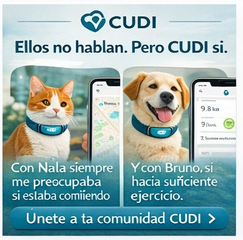
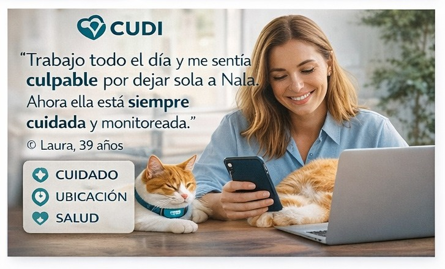
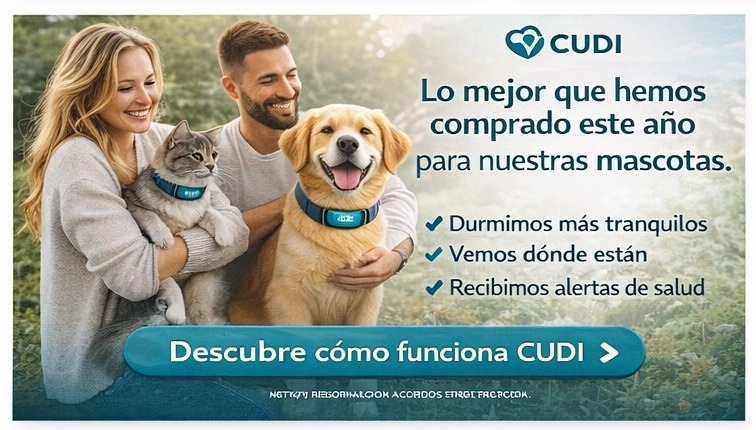
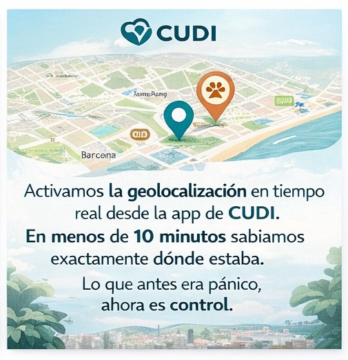
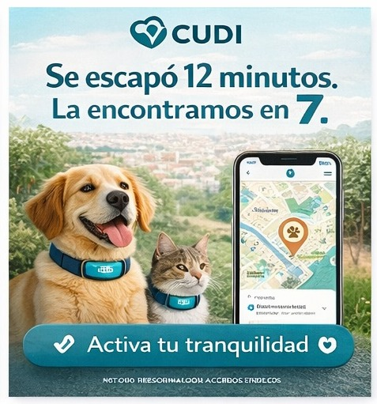
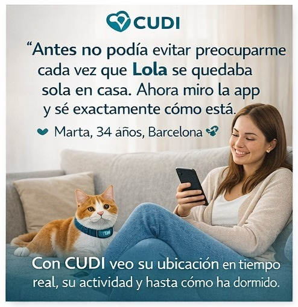
Por su parte, TikTok Ads se enfocará en contenido generado por usuarios respecto a su experiencia en la app, con piezas educativas y mensajes emocionales que conecten con la audiencia desde un enfoque más espontáneo y humano. La segmentación se realizará en función de intereses, comportamientos y ubicación geográfica, asegurando una comunicación relevante y alineada con las necesidades de cada usuario, de esta manera la app se va a llegar al algoritmo de personas con necesidades respecto a sus mascotas, permitiéndoles conocer la plataforma que les va a facilitar su vida como padres de mascotas.
Ejemplos de publicación:
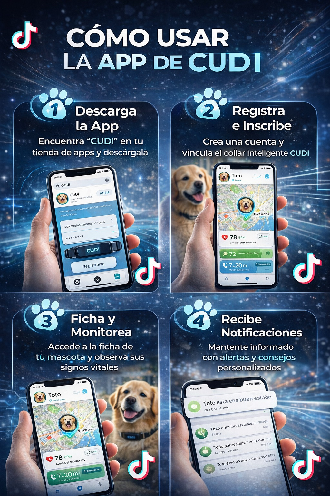
4.3.21.5 Influencer Marketing – Credibilidad y Amplificación Orgánica
El Influencer Marketing será una herramienta clave para amplificar el alcance de la marca y reforzar la confianza a través de voces creíbles dentro del sector. Se establecerán colaboraciones con micro influencers especializados en cuidado animal, veterinaria, entrenamiento y lifestyle pet, priorizando perfiles con audiencias genuinas y alto nivel de engagement.
La estrategia se basará en el uso real de la aplicación, la generación de reseñas honestas y transparentes y la implementación de códigos promocionales personalizados, lo que permitirá medir resultados, incentivar la prueba del servicio y potenciar la conversión de manera orgánica y auténtica.
Ejemplos de publicaciones:
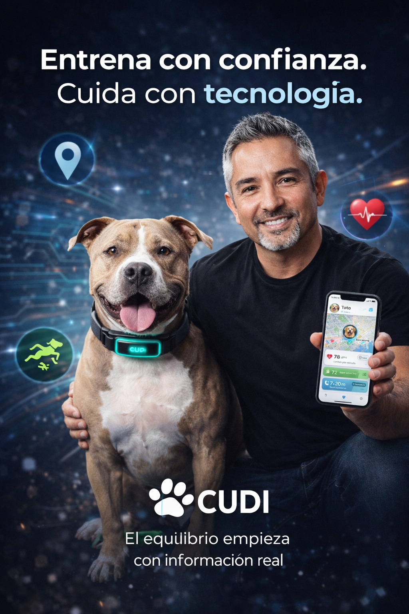
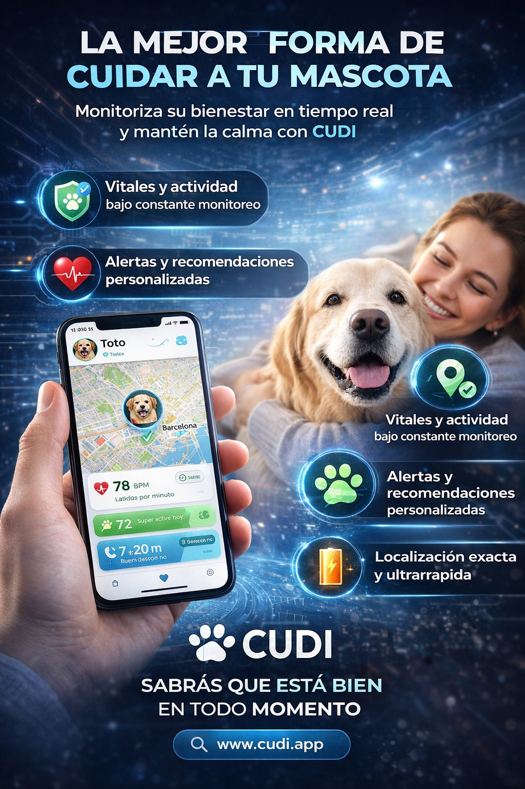
5. Entrega 3 - Plan de Acciones de Marketing Digital (Proyecto CUDI)
Enlace al Vídeo de Presentación ().
Enlace de la página web: CUDI | El Ecosistema Definitivo para el Bienestar Animal de Perros y Gatos
1. Introducción y Alineación de Objetivos
5.0.0.1 1.1. Resumen de la Estrategia y Objetivos de Negocio
El presente plan de marketing digital se establece como el instrumento operativo fundamental para validar el modelo de negocio del ecosistema CUDI durante su fase de lanzamiento en la ciudad de Barcelona. La estrategia tiene como propósito principal posicionar la plataforma como el referente tecnológico para el bienestar animal, asegurando la atracción de tráfico cualificado y guiando al usuario durante todas las fases del proceso de interacción hasta lograr la conversión y posterior fidelización a largo plazo.
Para garantizar la medición precisa del rendimiento, las acciones tácticas del plan se alinean directamente con los objetivos estratégicos establecidos para el primer año de actividad, divididos en tres áreas fundamentales de actuación:
A. Objetivos de Captación y Conversión hacia el Consumidor Final En el ámbito orientado al propietario de la mascota, el objetivo central radica en validar la disposición de pago hacia la solución integral ofrecida por la plataforma. Para ello, se ha establecido la meta de alcanzar doscientas cincuenta suscripciones activas de pago al cierre del primer año de operaciones, un volumen idóneo para validar el producto mínimo viable. Considerando una tasa de conversión conservadora del uno por ciento desde la visita hasta la transacción final, el plan de marketing asume la responsabilidad de generar veinticinco mil visitas de usuarios únicos cualificados hacia la página de aterrizaje principal durante los primeros doce meses de actividad.
B. Objetivos de Adquisición de la Red de Socios Profesionales Simultáneamente, la viabilidad operativa de la plataforma exige la consolidación de un entorno de proveedores logísticos y de salud. En el segmento corporativo, la meta fijada consiste en captar y registrar activamente a cincuenta y cinco socios locales durante el primer año, distribuidos estratégicamente en veinte clínicas veterinarias, veinticinco paseadores tecnificados y diez centros de estética canina. Las campañas de marketing digital orientarán esfuerzos de captación específicos hacia este sector profesional para asegurar una tasa de conversión del cinco por ciento sobre el total de visitantes que interactúen con la sección corporativa de la plataforma.
C. Objetivos de Posicionamiento, Autoridad y Visibilidad Para materializar la consecución de las métricas comerciales anteriores, el plan de marketing digital integrará acciones de posicionamiento orgánico orientadas a lograr una autoridad de dominio de diez puntos durante el primer año, mediante la obtención de enlaces entrantes desde bitácoras locales especializadas en el sector del bienestar animal. Asimismo, se buscará mantener una tasa de clics superior al dos por ciento en las búsquedas orgánicas relacionadas con las necesidades preventivas y conductuales de las mascotas.
La implementación coordinada de publicidad directa en motores de búsqueda para interceptar la intención de contratación de servicios, sumada a la optimización de los datos estructurados para el posicionamiento en motores generativos de inteligencia artificial, garantizarán la visibilidad continua del proyecto. De esta manera, el plan de marketing digital actúa como el mecanismo que transforma la propuesta de valor teórica en un volumen de interacciones reales, rentables y medibles, asegurando la escalabilidad comercial del ecosistema integral.
5.0.0.2 EL ECOSISTEMA WEB: Arquitectura SEO, GEO y Usabilidad Tecnológica
Estrategia SEM y Captación por Intención de Búsqueda
Para asegurar la adquisición de usuarios en la etapa final del embudo de conversión, el ecosistema ejecutará campañas de Búsqueda a través de la plataforma publicitaria Google Ads. Esta táctica se enfocará en interceptar consultas de alta intención transaccional en el área metropolitana de Barcelona, pujando por palabras clave exactas y concordancias de frase como collares inteligentes para mascotas, veterinario a domicilio urgente o paseadores de perros certificados.
Al estructurar grupos de anuncios específicos para cada línea de negocio, CUDI se asegurará de aparecer en las primeras posiciones patrocinadas de los resultados de búsqueda exactamente cuando la urgencia o la necesidad del consumidor sea máxima. Estas campañas dirigirán el tráfico directamente a las páginas de aterrizaje transaccionales creadas en el dominio propio, evitando dispersiones en la navegación. La optimización continua de estas pujas será fundamental para alcanzar el objetivo comercial de registrar veinticinco mil visitas cualificadas y consolidar las doscientas cincuenta suscripciones anuales exigidas por el modelo de negocio
2.1. Arquitectura Técnica, Estructura e Internacionalización El ecosistema digital de CUDI se ha materializado mediante la programación a medida de una infraestructura web compuesta por más de cuarenta archivos interconectados. Para garantizar la escalabilidad del modelo de negocio en el mercado europeo, la plataforma integra un motor de traducción neuronal basado en JavaScript. Este sistema detecta las preferencias del navegador y permite al usuario alternar dinámicamente entre las versiones en español, catalán e inglés mediante un selector ubicado en la barra superior. A nivel estructural, se ha implementado un mapa del sitio optimizado (Sitemap en formato XML) que clasifica jerárquicamente las URLs transaccionales, las categorías del marketplace de servicios y los artículos del portal educativo, facilitando un rastreo algorítmico eficiente.
2.2. Diseño de Interfaz (UI) y Jerarquía Visual Siguiendo los principios de diseño estético y minimalista, la interfaz de usuario se ha construido sobre una paleta corporativa que prioriza los espacios en blanco y los tonos azules, transmitiendo confianza clínica y limpieza tecnológica. La navegación principal utiliza un patrón arquitectónico flotante (Floating Island Navigation), el cual mantiene el menú principal y el acceso al buscador siempre visibles durante el desplazamiento vertical del usuario. La página de inicio aplica un diseño de cabecera dual asimétrica, combinando un mensaje de propuesta de valor directo en la mitad izquierda con imágenes de alta calidad de la aplicación y el dispositivo físico en la mitad derecha, captando la atención inmediata del visitante en la fase de atracción.
2.3. Usabilidad (UX) y Reducción de Fricción Transaccional Aplicando los principios heurísticos de usabilidad, el código fuente integra soluciones avanzadas para minimizar la fricción en el embudo de conversión. En lugar de redirigir al usuario a una nueva página al añadir un producto, se ha programado un carrito lateral dinámico (Side-Cart) en JavaScript que actualiza el importe total en tiempo real y permite gestionar la compra sin abandonar la navegación activa.
En la fase final de pago (Checkout), se ha diseñado una pasarela libre de distracciones visuales, incorporando una barra de progreso secuencial y numérica que informa al consumidor sobre el estado exacto de su transacción. Asimismo, para tangibilizar el modelo de negocio Lock-in, la web incluye un simulador interactivo de la aplicación móvil. Esta herramienta permite al visitante interactuar con el panel biométrico, visualizar alertas generadas por inteligencia artificial y experimentar el flujo de reservas de clínicas veterinarias y paseadores, reduciendo drásticamente la incertidumbre previa a la suscripción.
5.0.0.3 2.4. Estrategia de Posicionamiento Orgánico (SEO y GEO) y Código Fuente
Dominio Estratégico y Arquitectura de Metadatos La base del posicionamiento comienza desde la elección del nombre en internet. El ecosistema se aloja bajo el dominio cudi.ai, utilizando una extensión de nivel superior que comunica de forma inmediata a los motores de búsqueda y a los usuarios que el núcleo del negocio está fundamentado en la Inteligencia Artificial. A nivel de programación, la cabecera del documento (Head) se ha optimizado con etiquetas de título precisas y descripciones meta que integran las palabras clave principales del proyecto: bienestar animal, pet-tech, collar inteligente, veterinario veinticuatro horas y salud preventiva animal.
Optimización del Banner Principal (Hero Section) y Redacción Semántica En la primera sección visible de la plataforma (el banner principal), se ha aplicado una jerarquía de encabezados perfecta para el rastreo algorítmico. El mensaje principal utiliza una etiqueta de máximo nivel (H1) que reza: Cuidado inteligente para tus mascotas, vayas donde vayas. Justo debajo, la redacción del texto persuasivo (Copywriting) incluye una alta densidad de palabras clave relacionadas con el Job to be Done del usuario, utilizando frases estratégicas como ecosistema integral, tranquilidad absoluta y mejores especialistas. Esta semántica se repite de forma natural a lo largo del código fuente, consolidando términos frecuentes como gemelo digital, telemetría y red veterinaria certificada.
SEO para Imágenes y Atributos Visuales Para dominar también los resultados de búsqueda visuales (Google Imágenes), se ha evitado por completo el uso de nombres de archivo genéricos o numéricos generados por cámaras. Al auditar el código fuente, se evidencia que todas las fotografías están nombradas de forma descriptiva con guiones, utilizando archivos como hero_family_duo.png, collar-mascotas.png, b2b-vet.png y market-walking-duo.png. Esta optimización técnica, sumada a la implementación de los atributos de texto alternativo (Alt text) descriptivos, garantiza que las imágenes aporten valor semántico al posicionamiento global de la página.
Optimización para Motores Generativos (GEO) y Datos Estructurados El código HTML de la plataforma se ha programado para cumplir estrictamente con los parámetros de rastreo algorítmico de las nuevas inteligencias artificiales. El avance técnico más significativo es la inyección de marcado de datos estructurados en formato JSON-LD, cumpliendo con los estándares del consorcio Schema.
A lo largo del código, se han establecido diferentes entidades de información para que los asistentes virtuales entiendan la plataforma a la perfección:
El portal general está parametrizado semánticamente como Organización y Sitio Web, incluyendo funciones de búsqueda integradas.
El dispositivo físico principal está etiquetado como Producto, aportando variables algorítmicas de disponibilidad de inventario y precio.
La red de captación de socios profesionales (B2B) incorpora el marcado específico de Negocio Local.
El portal educativo de salud preventiva está codificado bajo la etiqueta de Publicación de Blog, acompañado por una sección de Preguntas Frecuentes (FAQPage) para responder consultas directas de los usuarios en los chats de inteligencia artificial.
2.5. Calidad EEAT, Prueba Social y Cumplimiento Legal
Para certificar los estándares de Experiencia, Conocimiento, Autoridad y Fiabilidad (EEAT) exigidos por los buscadores en temáticas de salud, la plataforma exhibe de forma prominente módulos de prueba social. Las tarjetas de los servicios asociados (clínicas, seguros y nutrición) muestran insignias de validación profesional y sistemas de calificación mediante estrellas, aportando seguridad en la decisión de compra.
Finalmente, la estructura de la plataforma cumple de forma rigurosa con la Ley de Servicios de la Sociedad de la Información y de Comercio Electrónico (LSSI-CE). El pie de página corporativo garantiza el acceso directo a los avisos legales, la política de gestión de cookies, el tratamiento de privacidad y un documento exhaustivo sobre las condiciones de cancelación de los servicios de hardware y software, blindando la integridad legal del modelo de suscripción.
5.0.0.4 2.6. Rendimiento Técnico, Core Web Vitals y Diseño Adaptativo
Un aspecto crucial que diferencia a la plataforma de CUDI de una arquitectura básica es la optimización del rendimiento de carga y el diseño cien por cien responsivo. Aplicando los principios de optimización de experiencia de usuario y las métricas Core Web Vitals exigidas por los motores de búsqueda, el código fuente ha sido depurado para garantizar tiempos de carga mínimos. Este factor es innegociable para los consumidores que navegan desde dispositivos móviles y esperan una interactividad inmediata. Al optimizar el peso de los recursos multimedia y estructurar el código en bloques modulares, se elimina la fricción operativa. Esta agilidad técnica reduce drásticamente la tasa de abandono y asegura que el ecosistema gráfico premium no penalice el tiempo de respuesta durante el proceso de compra.
5.0.0.5 2.7. Arquitectura de Información y Centro de Conocimiento A nivel estructural
destaca la compleja programación del Centro de Conocimiento CUDI. En lugar de implementar un formato corporativo tradicional, la plataforma cuenta con una arquitectura basada en agrupaciones semánticas. Esta sección alberga las Guías Oficiales de Bienestar y Prevención Animal, diseñadas estratégicamente para captar búsquedas informativas de alto volumen en la etapa inicial del embudo de conversión. Al estructurar el contenido educativo mediante esta matriz, la plataforma no solo instruye al consumidor sobre salud preventiva, sino que cumple con las más estrictas exigencias algorítmicas para consolidar una autoridad de dominio robusta.
5.0.0.6 2.8. Despliegue Técnico del Marketplace de Servicios B2B2C
El código fuente demuestra de forma tangible la escalabilidad del modelo de negocio al incluir la maquetación operativa del catálogo de socios comerciales. La programación de módulos específicos para servicios de salud, que integra perfiles de proveedores reales como EcoPet Organic o Vitality Mix junto con sus valoraciones y descripciones detalladas, materializa la promesa del ecosistema. Esta interfaz permite al usuario comprender visualmente cómo la adquisición del hardware físico abre la puerta a una red integral de venta cruzada de servicios de bienestar animal.
2.9 Acciones Offline: Sinergia Físico-Digital y Captación en Clínicas
Cumpliendo con los lineamientos de un plan de marketing omnicanal, la estrategia de captación de CUDI no se limitará exclusivamente al entorno digital, sino que capitalizará la infraestructura física de su red corporativa. El ecosistema aprovechará la captación de los cincuenta y cinco socios profesionales locales para implementar una táctica de transición del mundo físico a la digital.
Se desarrollará una acción offline consistente en la distribución de material impreso estratégico, como expositores de mostrador y cartelería informativa, en las salas de espera de las veinte clínicas veterinarias y los diez centros de estética canina asociados. Este material físico incluirá códigos escaneables de respuesta rápida que dirigirán a los clientes directamente a la descarga de la aplicación móvil corporativa y al simulador interactivo del gemelo digital alojado en la página web.
Esta táctica presencial resulta altamente efectiva, ya que permite transformar el tráfico peatonal y cautivo de los establecimientos físicos en usuarios digitales cualificados. Al impactar al propietario de la mascota en un entorno médico donde su nivel de receptividad sobre la salud animal es óptimo, se maximiza la tasa de conversión, reduciendo significativamente el coste de adquisición publicitaria y consolidando la autoridad de la marca CUDI de manera tangible en la ciudad de Barcelona.
ESTRATEGIA DE ATRACCIÓN: Canales Externos y Fidelización
5.0.1. 3.1. Social Media Marketing (SMM) y Social Ads:
5.0.1.1 A. Objetivos de Branding (Posicionamiento y Reconocimiento de Marca):
No SMART: Posicionar el Smart Collar de CUDI como la alternativa tecnológica líder en Pet Humanization en Barcelona, transmitiendo valores de "paz mental" y seguridad a los dueños mediante contenido emocional.
SMART 1 (Comunidad): Alcanzar una base sólida de 2.000 seguidores cualificados (suma de Instagram, Facebook y TikTok) al finalizar el primer año, priorizando un crecimiento controlado en nuestro nicho frente a un volumen masivo sin interés real.
SMART 2 (Top of Mind): Aumentar el tráfico directo hacia la web y las búsquedas de marca ("Cudi App" o "Smart Collar CUDI") en un 20% trimestral.
5.0.1.2 B. Objetivos de Performance (Impacto de las redes en el negocio):
SMART 1 (Tráfico Social): Generar 10.000 visitas a la Landing Page del Smart Collar provenientes exclusivamente de los canales de Social Media (tráfico social orgánico + anuncios en Meta/TikTok Ads) a lo largo de los primeros 12 meses.
SMART 2 (Conversión Social): Lograr que el tráfico derivado desde las redes sociales mantenga una ratio de conversión a registro/compra del 1,5% en la web, justificando así la rentabilidad de las acciones y campañas realizadas en las plataformas sociales
5.0.2. 3. La Cebolla de Contenidos (Foco: Smart Collar)
5.0.3. Capa 1: MARCA (Brand)
CUDI: Ecosistema tecnológico integral centrado en la salud preventiva, la longevidad y la "humanización" de las mascotas.
5.0.4. Capa 2: PRODUCTO (Product)
El Smart Collar: Dispositivo wearable avanzado que conecta la vida física de la mascota con la app de servicios.
5.0.4.1 Capa 3: BENEFICIOS FUNCIONALES (Rational Benefits)
5.0.5. Funcional:
Geolocalización en tiempo real (GPS) ultrarrápida.
Telemetría 24/7 monitoreo constante vitales, sueño, actividad y gastos calóricos.
sincronización de datos en tiempo real con la App de CUDI
Historial de rutas de los recorridos realizados por la mascota
Alerta de zonas seguras
Collar resistente al agua, al polvo, y a los impactos fuertes. Además, cuenta con una batería de larga duración.
identificación digital de la mascota.
Análisis de comportamiento
Luces LED de seguridad
Sensor de temperatura
5.0.6. BENEFICIOS EMOCIONALES (Emotional Benefits)
Paz Mental y Tranquilidad: Reducción drástica del estrés al eliminar la incertidumbre sobre el estado de la mascota.
Confianza y Sensación de control: Empoderamiento y sentimiento de protección absoluta.
Libertad y Conexión: Libertad para disfrutar de paseos sin sustos y un mayor interés/curiosidad por entender las necesidades del animal.
Capa 4: TERRITORIOS DE CONTENIDO (Temáticas)
Aventuras sin Sustos: Contenido sobre rutas por la naturaleza, viajes pet-friendly o paseos nocturnos. Muestra la libertad y seguridad que te da el GPS y la luz LED sin hablar de la tecnología en sí.
Salud Preventiva (Pet-Tech)": Consejos veterinarios ágiles sobre prevención de golpes de calor, control de peso o la importancia del descanso, conectándolo con el sensor de temperatura y el gasto calórico
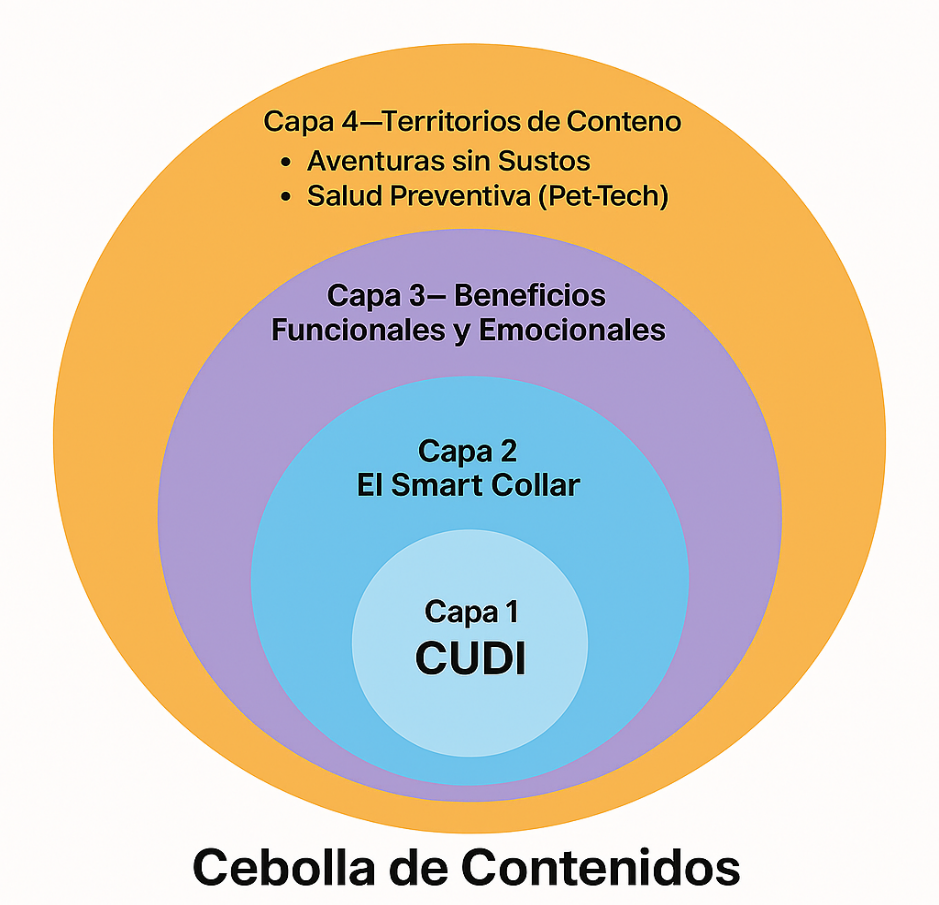
Historias de la Comunidad (Vínculo) : Mostrar casos reales (User Generated Content) de dueños que han mejorado la relación y el tiempo de calidad con su mascota gracias a entender mejor sus necesidades
5.1. Matriz de contenido:
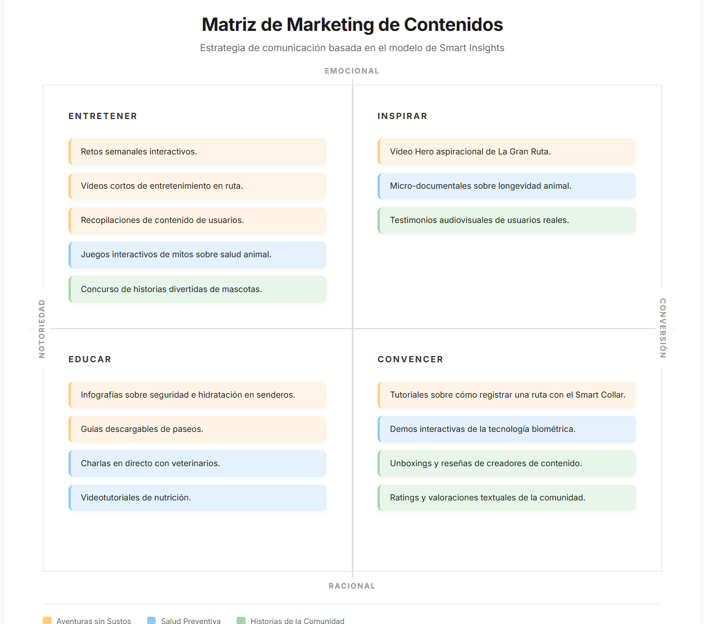
Plan de Medios Mensual - Lanzamiento CUDI
| Canal / Medio | Formatos de Contenido | Tercero/ Propietario | Anuncios (Ads) | Frecuencia | Horas | Presupuesto Mensual |
|---|---|---|---|---|---|---|
| Instagram/ TikTok | - Inspirar: reels aspiracionales de mascotas disfrutando sueltas en la naturaleza | Tercero | Si | 3 Reels/ TikToks cortos a la semana (12 al mes) | 24 hs | 880 Euros(480 en contenido y 400 en ads) |
| Vídeos de Unboxing y Reviews realizados por creadores de contenido (Influencers) probando la monitorización | Tercero | No | 1 videos por semana ( 4 por mes) | 8 h | 1200 Euros | |
| Imágenes y micro-documentales sobre el paso del tiempo y cómo darle más años de vida a tu mejor amig@ | Propio | Si | 1 Reels / TikToks (4 a la semana) | 10 hs | 300 Euros | |
| Videos tutoriales sobre salud, nutrición y bienestar de la mascota brindados por expertos. Videos tutoriales con tips y recomendaciones Charlas con expertos en directo sobre cómo tratar la ansiedad por separación en perros urbanos | Tercero | Si | 1 video a la semana (4 al mes) | 8 hs | 400 Euros (200 en contenido y 200 en ads) | |
| Instagram/ TikTok/ Facebook | Juegos interactivos durante el recorrido. Videos de entretenimiento de cada paseo. Juegos sobre la salud de las mascotas Concurso de historias de usuarios para que compartan sus experiencias y cuenten como ha mejorado la calidad de vida de su mascota con el uso del collar. | Propio | No | 1 a la semana (4 al mes) | 8 hs | 0 |
| Videos testimoniales de como la tecnología de Cudi ha mejorado la calidad de vida de las mascotas y la tranquilidad de sus padres | Propio | Si | 1 a la semana (4 al mes) | 14 h | 300 Euros | |
| Blog / Web CUDI | Infografías sobre recomendaciones del cuidado de la mascota durante los paseos. Guías de cada paseo con el detalle del recorrido (incluye: puntos clave de hidratación, puntos de desechos, km del recorrido) | Propio | No | 1 a la semana (4 al mes) | 8 hs | 0 |
| Demo interactivo explicando el funcionamiento del collar y su tecnología enfocada en la prevención y cuidado de la mascota. | Propio | Si | 1 | 30 hs | 480 | |
| TOTAL | 110 hs | 3560 euros |
5.1.0.1 Integración en el Embudo de Conversión (TOFU / MOFU / BOFU)
Con base en la Matriz y el Plan de Medios mensual, los formatos se alinean al Customer Journey:
TOFU (Atracción - Inspirar/Entretener): Captación inicial emocional mediante imágenes aspiracionales en la naturaleza, vídeos de entretenimiento de paseos en TikTok y micro-documentales de longevidad en YouTube.
MOFU (Consideración - Educar): Nutrición del usuario aportando valor técnico. Despliegue de guías detalladas de paseos, infografías de cuidado, tutoriales veterinarios y Lives sobre ansiedad por separación.
BOFU (Conversión - Convencer): Acción directa hacia la venta de la suscripción/collar. Impulso mediante Unboxings de influencers con Social Ads, demos interactivas de tecnología y consolidación del Social Proof con testimonios reales.
5.1.1. Contenido Blockbuster + Acción
Seleccionar un territorio y pensar un contenido Blockbuster.
Hacer la explicación del territorio, matriz y plan. Hacer explicación de qué Beneficios Emocionales y/o Funcionales se desea transmitir.
Ej. Creación de un concurso, presentación de rutas, etc. que tengan que ver con el Contenido Blockbuster
Crear un calendario de contenidos por 1 mes sobre esta acción.
5.1.1.1 BLOCKBUSTER - Territorio seleccionado: “Aventuras sin Sustos”
5.1.2. Definición del Territorio:
Aventuras sin Sustos Este eje de contenido comunica la libertad de explorar la naturaleza junto a la mascota bajo la protección del dispositivo inteligente de CUDI. El enfoque omite el exceso de datos técnicos para priorizar la experiencia del usuario, promoviendo un estilo de vida activo al aire libre. Estratégicamente, este territorio refuerza la confianza del propietario y facilita la creación de material visual inspiracional con un alto potencial de viralidad.
2. Transmisión de Beneficios Estratégicos El desarrollo de este contenido de alto impacto proyecta simultáneamente dos niveles de valor hacia el consumidor final:
5.1.2.1 3. Acción Blockbuster: La Gran Ruta CUDI - Aventuras sin Sustos
Descripción de la Campaña y Mecánica de Gamificación Esta acción de alto impacto combina dinámicas de retos periódicos, gamificación y creación de contenido generado por el usuario (UGC). La iniciativa central consiste en el lanzamiento del primer mapa colaborativo de trayectos aptos para mascotas, donde los propietarios participan activamente registrando sus rutas mediante el dispositivo inteligente de monitorización. La mecánica de participación exige que los usuarios completen semanalmente un recorrido y lo compartan en sus perfiles sociales mediante vídeos cortos verticales y fotografías, indicando la distancia exacta recorrida y utilizando la etiqueta oficial AventurasSinSustosCUDI.
Incentivos de Participación y Justificación Estratégica La integración en esta dinámica otorga a los usuarios incentivos directos, logrando su participación automática en sorteos de hardware corporativo, la mención de su trayecto como la ruta destacada del mes y su inclusión permanente en el mapa oficial del ecosistema. A nivel de negocio, esta acción se clasifica como prioritaria porque garantiza la generación masiva de contenido orgánico y potencia la tasa de compartición, aprovechando el alto interés social que generan los animales en entornos naturales. Simultáneamente, la campaña demuestra de forma empírica todos los beneficios de la telemetría y el GPS sin recurrir a descripciones técnicas, aportando valor real a la comunidad mediante la creación de guías de ocio verificadas.
| Indicadores y Métricas Financieras | Fase de Atracción (Inspirar) | Fase de Consideración y Educación | Total Mensual Consolidado |
|---|---|---|---|
| Costos de creación de contenido y gestión | 480,00 € | 2.480,00 € | 2.960,00 € |
| Inversión publicitaria directa (Ads) | 400,00 € | 200,00 € | 600,00 € |
| Costo Total de Promoción Mensual | 880,00 € | 2.680,00 € | 3.560,00 € |
| Distribución de la inversión publicitaria (%) | 66,6% | 33,4% | 100,0% |
| Impresiones estimadas | 100.000 | 40.000 | 140.000 |
| CPM (Costo por mil impresiones) | 4,00 € | 5,00 € | 4,28 € |
| Clics o visitas a la página de destino | 600 | 400 | 1.000 |
| CPC (Costo por clic) | 0,66 € | 0,50 € | 0,60 € |
| Tasa de conversión a registro de usuario | 10,0% | 15,0% | 12,0% |
| Número de registros generados | 60 | 60 | 120 |
| Tasa de conversión de registro a venta | 10,0% | 15,0% | 12,5% |
| Número de ventas finales (Suscripciones) | 6 | 9 | 15 |
| Tasa de conversión global (Visita a Venta) | 1,00% | 2,25% | 1,50% |
| Costo de Adquisición por Venta (CPA - Ads) | 66,66 € | 22,22 € | 40,00 € |
| Ingresos totales generados | 360,00 € | 540,00 € | 900,00 € |
| Costo de ventas (50% margen) | 180,00 € | 270,00 € | 450,00 € |
| Costos totales operativos (Promoción + Venta) | 1.060,00 € | 2.950,00 € | 4.010,00 € |
| Lucro (Beneficio neto del primer mes) | -700,00 € | -2.410,00 € | -3.110,00 € |
5.1.3. Estructura de Campañas Social Ads (Meta y TikTok)
Objetivo general: Captación de tráfico cualificado y registros Presupuesto Mensual Publicitario: 600,00 € Mercado objetivo: Barcelona y Área Metropolitana
| Objetivos de campaña | Audiencias Segmentadas | Formatos de Anuncio y Contenido | Ubicaciones | Timing | Peso del Presupuesto | Importe Mensual |
|---|---|---|---|---|---|---|
| Atracción e Inspiración (Prospección) | Público Guardado: Segmentación orientada a padres de mascotas con intereses en actividades al aire libre, bienestar animal y tecnología inteligente. | Vídeo Vertical Corto: Doce piezas visuales de mascotas disfrutando sueltas en la naturaleza. | Instagram Reels, TikTok | Semana 1-4 | 66,6% | 400,00 € |
| Consideración y Educación (Retargeting) | Público Personalizado: Usuarios que han visualizado los contenidos de la fase de atracción previa o han interactuado con los perfiles sociales de la marca. | Vídeo Educativo: Cuatro vídeos tutoriales sobre salud preventiva y charlas con expertos sobre ansiedad por separación. | Instagram, TikTok, Facebook | Semana 1-4 | 33,4% | 200,00 € |
| TOTAL, MES 1 | 100% | 600,00 € |
A continuación, se presenta la planificación financiera publicitaria proyectada a doce meses, estructurada específicamente para las campañas en el ecosistema de Meta y TikTok.
El modelo se ha calculado con un presupuesto anual total de seis mil euros, cifra que garantiza la viabilidad matemática del proyecto y asegura el cumplimiento exacto de los indicadores clave de rendimiento establecidos en el documento estratégico.
5.1.3.1 Resumen de Presupuesto Anual: Fases de Campañas Social Ads
Objetivo general: Captación de tráfico cualificado y ventas de suscripciones online Duración del plan: 12 meses Presupuesto Total Publicitario Anual (Solo Ads): 6.000,00 €
| Periodo | Inversión Mensual | Fase Estratégica y Estado de la Campaña |
|---|---|---|
| Mes 1 | 600,00 € | Lanzamiento: Introducción al mercado y testeo de audiencias |
| Mes 2 | 600,00 € | Estabilización: Recopilación de datos en el código de seguimiento |
| Mes 3 | 500,00 € | Optimización: Ajuste de segmentación y reducción de costes |
| Mes 4 | 500,00 € | Crecimiento: Foco en audiencias similares de alta interacción |
| Mes 5 | 500,00 € | Mantenimiento: Estabilidad del coste por adquisición |
| Mes 6 | 500,00 € | Mantenimiento: Consolidación del tráfico recurrente |
| Mes 7 | 450,00 € | Madurez: Maximización de la rentabilidad del anuncio |
| Mes 8 | 450,00 € | Madurez: Aprovechamiento del posicionamiento orgánico adquirido |
| Mes 9 | 450,00 € | Madurez: Sinergia con la red de profesionales asociados |
| Mes 10 | 450,00 € | Madurez: Retargeting de usuarios recurrentes |
| Mes 11 | 500,00 € | Reactivación: Promociones previas al cierre del ejercicio |
| Mes 12 | 500,00 € | Cierre Anual: Consolidación de ventas finales y fidelización |
| Total | 6.000,00 € | Inversión publicitaria directa anual consolidada |
5.1.4. Eslogan de CUDI
“Cuidado inteligente para tus mascotas, sin importar donde estes”
5.1.5. Logo de CUDI
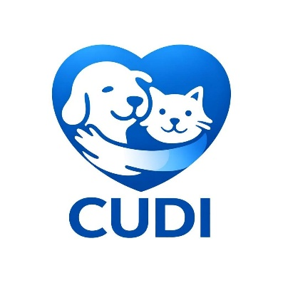
5.1.6. Página de Facebook
La Creación de la página corporativa establece el punto de partida de la presencia digital de la marca. En el diseño implementado destaca la cabecera panorámica con el logotipo oficial y el eslogan, elementos visuales estructurados para generar un reconocimiento inmediato y transmitir la propuesta de valor a la audiencia objetivo.
El link de la página personalizado es: https://www.facebook.com/Cudi2026
5.1.7. Portafolio de Facebook
5.1.8. Cuenta publicitaria
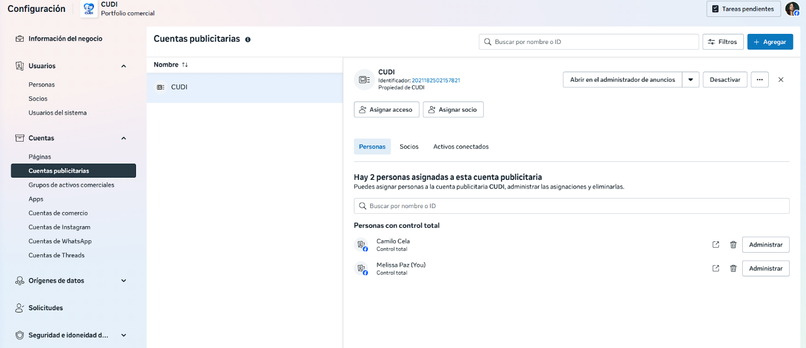
5.1.9. Administradores de las paginas
5.1.10. Cuenta comercial
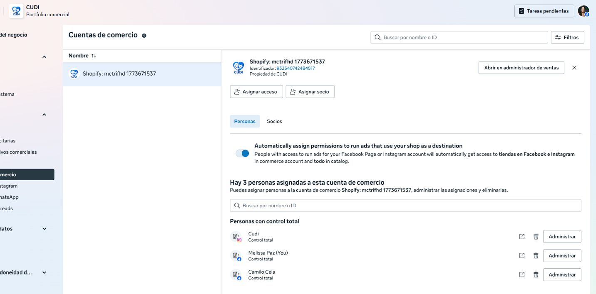
5.1.11. Instagram
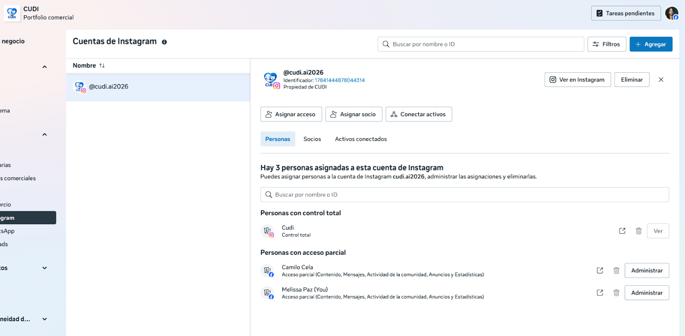
5.1.12. Pixel
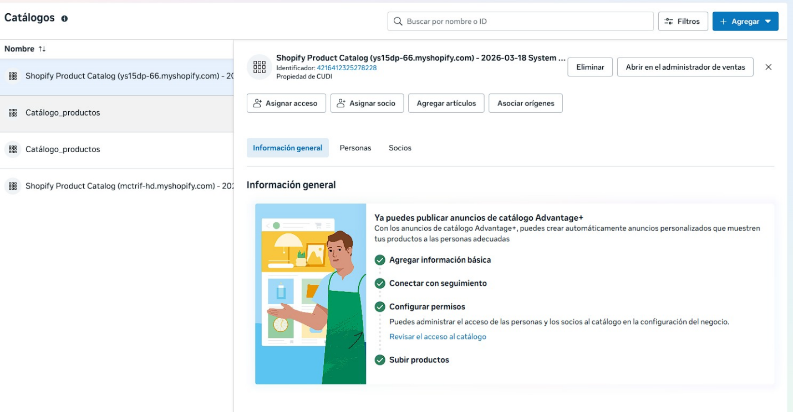
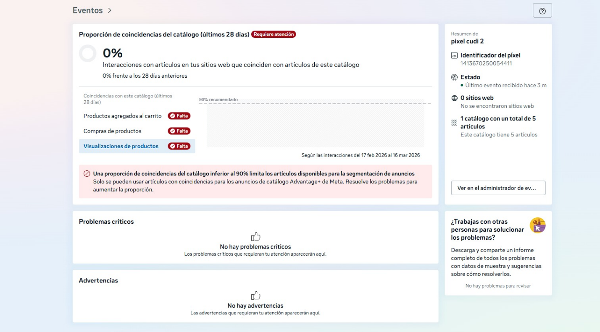
El código de seguimiento fue creado con el fin de registrar la actividad de los visitantes en el sitio web, medir las conversiones y recopilar la información necesaria para nutrir las audiencias de las campañas publicitarias de retargeting
5.1.13. Creación de catálogo de productos dentro de Meta
El despliegue de la oferta comercial se materializa a través de la integración del catálogo electrónico en el administrador de ventas. El inventario consolidado muestra los diferentes dispositivos tecnológicos y servicios de la plataforma, detallando sus precios de lanzamiento y su disponibilidad en el mercado. Se establecieron 5 productos, con el fin de poder crear un conjunto de producto, pero la estrategia de se centrará en los dos primeros.
5.1.13.1. Creación de Audiencias Estratégicas en Meta Ads: Públicos Personalizados y Similares
La configuración de las audiencias dentro del Administrador Comercial de Meta se ha estructurado siguiendo rigurosamente la metodología del embudo de conversión, diferenciando las acciones de prospección de tráfico frío frente a las campañas de retargeting para tráfico caliente. Apoyándose en la recopilación de datos habilitada por la instalación del Píxel de seguimiento en la plataforma web, se han configurado cuatro agrupaciones de público fundamentales para garantizar la rentabilidad de las campañas.
Públicos Personalizados (Estrategia de Remarketing) Estos conjuntos de datos se nutren de usuarios que ya han interactuado previamente con el ecosistema CUDI, situándose en la fase de consideración y decisión final.
Público Personalizado 1 (Tráfico Web): Se ha configurado una audiencia que agrupa a los visitantes de la página web corporativa durante los últimos treinta días, parametrizando las visitas a las URL de los planes de suscripción y del collar inteligente. El objetivo táctico es impactar nuevamente a los usuarios que mostraron intención de compra pero abandonaron la sesión antes de finalizar el pago, ofreciéndoles anuncios específicos para cerrar la transacción.
Público Personalizado 2 (Interacción Social): Se ha creado una audiencia dinámica que recopila a los usuarios que han interactuado, guardado o compartido las publicaciones corporativas en los perfiles oficiales de Instagram y Facebook. Esta segmentación permite retener el interés de la comunidad digital activa y guiar a los seguidores hacia la página de aterrizaje transaccional.
Públicos Similares o Lookalike (Estrategia de Prospección) Para escalar el alcance del proyecto y captar nuevos clientes sin desperdiciar presupuesto en audiencias irrelevantes, se ha utilizado la inteligencia algorítmica de la red publicitaria para clonar los perfiles de los usuarios de mayor valor.
5.1.13.2 Creación y Redacción de las Publicaciones Estratégicas (Social Media Copywriting)
Para nutrir los conjuntos de anuncios descritos anteriormente y dotar de contenido a los perfiles sociales, se han diseñado tres publicaciones específicas. Cada una de ellas responde a una fase distinta del embudo de conversión (Top, Middle y Bottom of the Funnel) y se alinea con los territorios temáticos definidos en la matriz de contenidos.
5.1.13.3 Publicación 1: Fase de Atracción (Orientada al Público Similar - Lookalike)
Territorio Temático: Aventuras sin Sustos (Inspirar).
Formato Visual: Fotografía de alta resolución de un perro corriendo libremente por un entorno natural, portando el dispositivo físico de CUDI.
Texto principal: Disfrutar de la naturaleza con tu mejor amigo nunca ha sido tan relajante. Deja que corra, explore y descubra el mundo mientras tú mantienes la tranquilidad absoluta. Con nuestra tecnología de geolocalización ultrarrápida, siempre sabrás su ubicación exacta directamente desde tu teléfono móvil.
Llamada a la acción (CTA): Haz clic en el enlace de nuestra biografía para descubrir cómo transformar vuestros paseos diarios.
Etiquetas (Hashtags): #CudiPetTech #AventurasSinSustos #BienestarAnimal #PerrosDeBarcelona #SaludPreventiva
5.1.13.4. Publicación 2: Fase de Consideración (Orientada al Público de Interacción Social)
Territorio Temático: Salud Preventiva (Educar).
Formato Visual: Carrusel de imágenes (Infografía) con tres consejos veterinarios sobre la hidratación y el control del ejercicio durante la primavera.
Texto principal: El ejercicio es fundamental para la longevidad animal, pero el sobreesfuerzo puede ser perjudicial si no se controla adecuadamente. El ecosistema CUDI monitoriza la actividad física, el descanso y el gasto calórico de tu compañero en todo momento, enviándote alertas preventivas de salud para evitar golpes de calor o fatiga extrema.
Llamada a la acción (CTA): Guarda esta publicación para tu próxima salida y comparte estos consejos con otras familias responsables.
Etiquetas (Hashtags): #SaludAnimal #CuidadoInteligente #VeterinariaPreventiva #MascotasSanas #EcosistemaCudi
5.1.13.5 Publicación 3: Fase de Conversión (Orientada al Público de Retargeting Web)
Territorio Temático: Producto y Venta Directa (Convencer).
Formato Visual: Vídeo demostrativo corto que muestra la aplicación móvil sincronizada mostrando constantes vitales reales. Esta publicación incluye el etiquetado directo de productos del catálogo de Meta (Smart Collar a 25 euros y Suscripción Premium a 30 euros).
Texto principal: ¿Has visitado nuestra tienda y aún tienes dudas sobre cómo mejorar la vida de tu mascota? El momento de proteger a tu familia peluda es ahora. Nuestro dispositivo biométrico registra la calidad del sueño y la ubicación las veinticuatro horas del día. Únete a la red de propietarios que ya duermen con total paz mental.
Llamada a la acción (CTA): Toca la etiqueta de producto en este vídeo para finalizar tu pedido hoy mismo y aprovechar el envío gratuito a toda la península.
Etiquetas (Hashtags): #SmartCollar #PazMental #TecnologiaParaMascotas #LongevidadAnimal #FamiliaCudi
5.1.14. INSTAGRAM
5.1.14.1 Link de Instagram de empresa https://www.instagram.com/cudi.ia?igsh=bjdmNXhyeHZvMXo0&utm_source=qr
Crear YouTube
Tiktok
5.1.15. 4. Acciones de Influencer Marketing.
5.1.15.1 4.1 E-mail Marketing y Automatización: Ecosistema de Retención 360°
Para superar el e-mail marketing tradicional y lograr una verdadera innovación en retención, la estrategia de Cudi se fundamenta en un Lifecycle Marketing Automatizado e Hiper-segmentado. En lugar de envíos masivos, se implementa un modelo de mensajería contextual alimentado en tiempo real por los datos biométricos del Smart Collar y el perfil de cada usuario.
El objetivo principal es reducir el churn (tasa de abandono) asegurando la percepción de valor desde el primer día. Este ecosistema se divide en tres pilares:
A. Protocolos de Fidelización Basados en el "Nudging" Aplicamos la Nudge Theory (economía del comportamiento) para incentivar la creación de hábitos de cuidado:
Onboarding del "Gemelo Digital": Un flujo de bienvenida de 5 mensajes en la app que educa al usuario sobre cómo la IA aprende los patrones de su mascota, elevando el valor percibido de la suscripción Premium.
The Weekly Paw-Report: Automatización de desempeño que compara la actividad semanal de la mascota con la media de su raza. Si la actividad es baja, el sistema sugiere automáticamente rutas locales.
Milestone Rewards (Gamificación): notificaciones en la app que celebran logros de salud (ej. peso ideal mantenido). Se premia al usuario con un "Cudi-Badge" coleccionable y descuentos dinámicos en el Marketplace.
Recuperación de Carrito: Recordatorios a las 4 y 24 horas ante el abandono de reservas de paseos o servicios veterinarios.
B. Curación de Contenidos: Newsletter "Smart Insights"La antigua newsletter educativa se transforma en un canal de nutrición (lead nurturing) bajo demanda:
Segmentación por "Life-Stage": El contenido muta automáticamente según la etapa de vida detectada. Por ejemplo, al entrar en etapa Senior (8+ años), el flujo prioriza cuidados articulares y cognitivos.
Contenido Colaborativo B2B y Social Proof: Integración de "Tips del mes" de nuestra red de 55 partners (veterinarios, adiestradores) y contenido generado por los usuarios (UGC), como fotos de rutas comunitarias, para fomentar el sentido de pertenencia.
C. Alertas Preventivas y Predictivas (Telemetría aplicada) Este es el mayor diferencial competitivo de Cudi, utilizando datos biométricos para generar cross-selling ético y salvar vidas:
Alertas de Anomalía Biométrica: Detecciones de alteraciones en sueño o frecuencia cardíaca disparan un aviso de "Prioridad Alta" con conexión directa al Chat Veterinario 24/7.
Predicción de Reposición (Smart Commerce): Cruzando el historial de compra y el gasto calórico real medido por el collar, el sistema calcula cuándo se agotará el alimento y envía un recordatorio de compra (1-clic).
Geo-Fencing de Salud y Alertas Ambientales: Avisos automáticos basados en la ubicación del usuario y sensores de temperatura, previniendo desde golpes de calor hasta informando sobre brotes de enfermedades locales (ej. leishmaniosis), sugiriendo productos preventivos.
5.1.16. Presencia en E-marketplaces (Acción B2B)
Cudi no opera como un simple catálogo, sino como un Orquestador de Ecosistema mediante una arquitectura API-First e integrando el paradigma del Headless Commerce. Inyectamos soluciones en el momento exacto en que el usuario las necesita.
5.1.16.1 3.3.1. Hub de Micro-Sourcing Local (Comercio Colaborativo)
"Dark Stores" Veterinarias: Sincronización de stock en tiempo real con pet shops y clínicas de barrio en Barcelona, priorizando la compra local y sostenible.
Click & Collect Express y Drop-shipping: Los usuarios pueden comprar en la app y recoger en menos de 1 hora en su clínica de confianza, o recibirlo mediante logística de última milla gestionada automáticamente por el socio.
3.3.2. Modelo "Retail-as-a-Service" (RaaS) Facilitamos la entrada al mercado barcelonés a Marcas Nativas Digitales (DNVB) sin necesidad de infraestructura física:
Suscripciones de Reposición Inteligente: Las marcas pagan una comisión por integrarse al algoritmo de gasto calórico de Cudi, generando compras recurrentes y automáticas.
Showrooming Digital y Publicidad Nativa: Patrocinio de guías de estilo de vida en la app (ej. rutas de senderismo) o apariciones como "Sugerencia de la IA" basadas en la telemetría del collar.
Data-as-a-Service (Insights): Venta de informes agregados y anonimizados sobre tendencias de consumo y salud para que los partners ajusten su demanda.
5.1.16.2 3.3.3. Infiltración en Marketplaces Globales (Estrategia Outbound)
Cudi en Amazon Brand Store: Venta del Smart Collar utilizado como "caballo de Troya". El empaque incluye un código QR que convierte al comprador del hardware en suscriptor Premium de la app.
API de Salud para Aseguradoras (Bundling): Integración del "Score de Salud" en apps de aseguradoras (Santevet, Mapfre). Los dueños de mascotas que mantienen métricas saludables reciben descuentos en sus pólizas.
5. Control, Medición y Analítica Digital
5.1. Herramientas de Medición: Implementación de Google Analytics 4 (GA4) y Google Search Console en la web para medir el comportamiento.
El éxito operativo se fundamenta en transformar el comportamiento en insights para optimizar el LTV (Life Time Value) y mitigar el Churn.
5.1.17. 5.1. Stack Analítico y Protocolos
Google Analytics 4 (GA4): Enfoque centrado en eventos del Customer Journey híbrido. Uso de Audiencias Predictivas (Machine Learning) para detectar riesgo de abandono mediante caídas en la actividad de telemetría y disparar reactivación automática. Incluye eventos personalizados como collar_sync_success o health_alert_click.
Google Search Console y GEO: Monitoreo de Core Web Vitals (crítico para el 70% del tráfico m-commerce) y de datos estructurados (Schema.org) para posicionar a Cudi como autoridad en la optimización para motores generativos (GEO).
Diagnóstico y Analítica de Producto: Implementación de Mixpanel para analizar interacciones complejas con el "Gemelo Digital" y Microsoft Clarity/Hotjar para mapas de calor que detecten fricciones en el embudo de suscripción.
5.2. Panel de KPIs y Retorno de Inversión (ROI): Qué métricas exactas van a definir el éxito del plan (ej. Coste de Adquisición de Cliente, Tasa de Conversión en el checkout, Tráfico Orgánico mensual).
5.1.17.1 Determinación de Objetivos y Estrategia Digital ( KPIs y KRIs)
Para la fase de lanzamiento (Año 1) de la App Cudi en Barcelona. Evitando la dispersión, la definición de objetivos se ha reducido a las tres metas SMART esenciales para validar el modelo de negocio..
5.1.18. Objetivo Core: Ventas y Captación (B2C)
El objetivo principal es validar que el "Pet Parent" está dispuesto a pagar por el ecosistema. sea a calculado las necesidades aplicando la lógica del embudo de conversión inverso:
KRI de Negocio: Alcanzar 250 suscripciones Premium activas al cierre del primer año en Barcelona. Un volumen realista para un Producto Mínimo Viable (MVP).
KPI de Conversión: Asumimos una tasa de conversión muy conservadora del 1% desde la visita hasta el pago, dada la fricción inicial de ser una marca desconocida.
KRI de Tráfico (Atracción): Aplicando el cálculo inverso (250/0,01), nuestro objetivo es generar 25.000 visitas de usuarios únicos cualificados hacia nuestra Landing Page en el Año 1 (aprox. 2.083 visitas al mes).
5.1.19. Objetivo de Oferta: Ecosistema de Partners (B2B)
KRI de Adquisición: Lograr el registro activo de 55 Partners locales ( 20 clínicas veterinarias, 25 paseadores tecnificados, 10 Peluquerías Caninas) en los primeros 12 meses.
KPI de Interés (Lead a Registro): Lograr una tasa de conversión del 5% de los profesionales contactados o que visitan nuestra sección B2B hacia el registro final en la plataforma.
5.1.19.1 Objetivo de Visibilidad: Posicionamiento en Buscadores (Branding)
KRI de Autoridad Digital: Lograr un Domain Authority (DA / MozRank) de 10 en el primer año, consiguiendo enlaces (backlinks) de blogs locales de mascotas.
KPI de Relevancia (CTR): Mantener un CTR (Click-Through Rate) superior al 2% en las búsquedas orgánicas relacionadas con nuestro Job-to-be-Done (ej. "ansiedad por separación perro").
5.1.20. Anexos
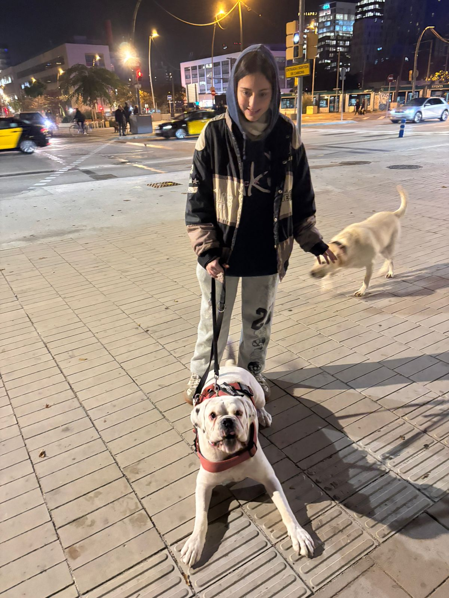
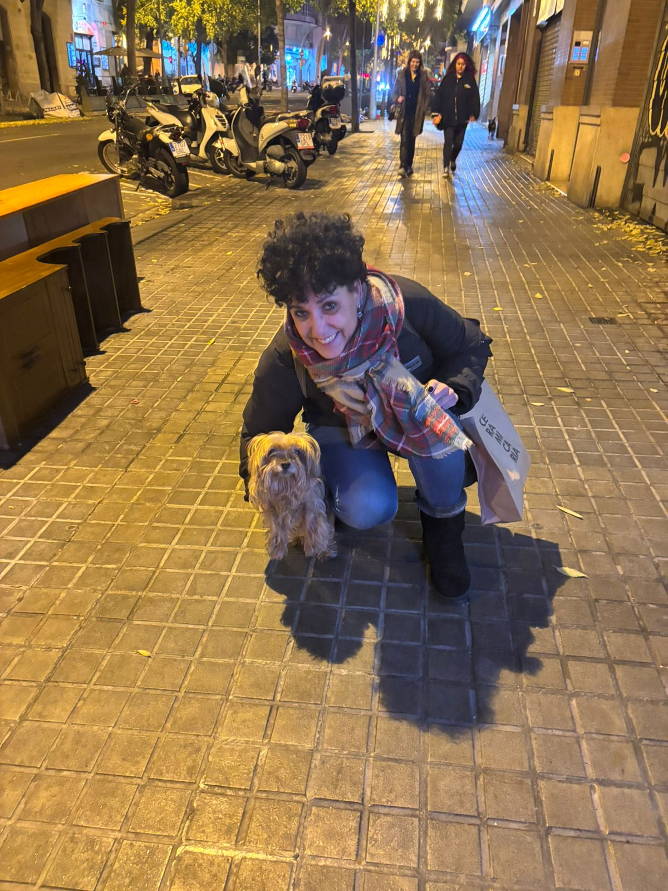
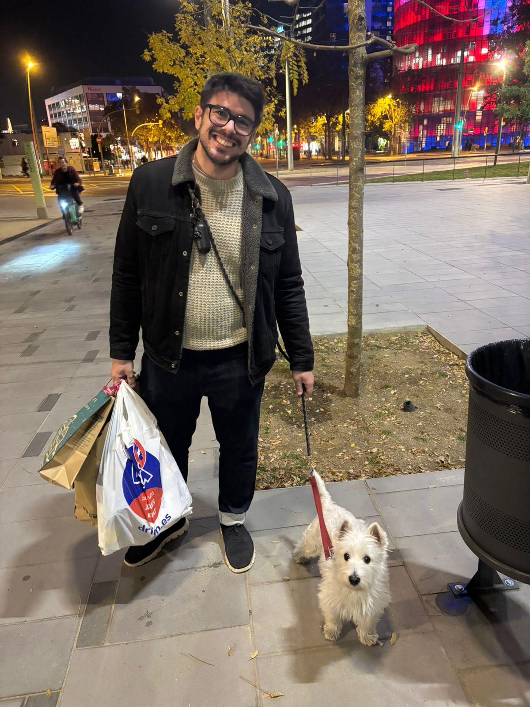
5.1.21. Referencias
(Bolet├¡n Oficial del Estado, 2023)Boletín Oficial del Estado. (2023, marzo 29). Ley 7/2023, de protección de los derechos y el bienestar de los animales. BOE-A-2023-7936. BOE-A-2023-7936 Ley 7/2023, de 28 de marzo, de protección de los derechos y el bienestar de los animales.
(ModelosDePlanDeNegocios, 2025) ModelosDePlanDeNegocios. (2025, agosto 13). Análisis del mercado de mascotas en España (2025). https://modelosdeplandenegocios.com/blogs/news/analisis-mercado-mascotas-espana
(IPMARK, 2025) IPMARK. (2025, junio 30). Informe IPMARK — Mascotas 2025. https://ipmark.com/informes/mascotas-2025/
(Revista Patrac, 2025) Revista Patrac. (2025, primer trimestre). Primer Plan Estatal de Acción contra el Abandono de Animales de Compañía en España. https://www.dsca.gob.es/sites/default/files/derechos-sociales/RevistaPatrac2025En-mar-rev.pdf
(ANDA, 2025) ANDA. (2025, octubre 16). España avanza en el proceso para la publicación del Listado Positivo de animales de compañía. https://andacentral.org/2025/10/17/espana-avanza-en-el-proceso-para-la-publicacion-de-un-listado-positivo-de-animales-de-compani
(Bolet├¡n Oficial del Estado, 2021) Boletín Oficial del Estado. (2021, 12 de mayo). Real Decreto-ley 9/2021, de 11 de mayo, por el que se modifica el texto refundido de la Ley del Estatuto de los Trabajadores, aprobado por el Real Decreto Legislativo 2/2015, de 23 de octubre, para garantizar los derechos laborales de las personas dedicadas al reparto en el ámbito de plataformas digitales. BOE-A-2021-7840. https://www.boe.es/diario_boe/txt.php?id=BOE-A-2021-7840
(Pacvue, 2025) Pacvue. (2025, abril 24). La economía de los animales de compañía en Europa: tendencias 2025. https://pacvue.com/es/blog/the-pet-economy-in-europe-market-trends-and-insights-for-2025/
(Ley 7/2023 Gobierno de Espa├▒a, 2023) Ley 7/2023 Gobierno de España. (2023). Ley 7/2023, de 28 de marzo, de protección de los derechos y el bienestar de los animales. Boletín Oficial del Estado, núm. 74, 28 de marzo de 2023, pp. 1–62. https://www.boe.es/eli/es/l/2023/03/28/7
(Gobierno de Espa├▒a, 2021) Gobierno de España. (2021). Plan de Recuperación, Transformación y Resiliencia. Ministerio de Asuntos Económicos y Transformación Digital. https://planderecuperacion.gob.es
(Ministerio de Derechos Sociales, 2024) Ministerio de Derechos Sociales, Consumo y Agenda 2030. (2024). Subvenciones para las Entidades de Protección Animal – Convocatoria 2024. BOE-A-2024-23749. https://www.boe.es/boe/dias/2024/11/14/pdfs/BOE-A-2024-23749.pdf
(FAADA, 2025) FAADA. (2025). Convocatoria de subvenciones para entidades de protección animal 2025. https://faada.org/actualidad-2135-abierta-la-convocatoria-para-la-solicitud-de-subvenciones-para-entidades-de-proteccion-animal-2025
(Animals Health, 2025) Animals Health. (2025, 27 de febrero). Informe 2025: El sector de los animales de compañía en España crece por encima de las predicciones. Animals Health. https://www.animalshealth.es/empresas/informe-2025-sector-animales-compania-espana-crece-por-encima-de-predicciones
(Parlamento Europeo y Consejo de la Uni├│n Europea, 2016) Parlamento Europeo y Consejo de la Unión Europea. (2016). Reglamento (UE) 2016/679 del Parlamento Europeo y del Consejo, de 27 de abril de 2016, relativo a la protección de las personas físicas en lo que respecta al tratamiento de datos personales y a la libre circulación de estos datos (RGPD). Diario Oficial de la Unión Europea. https://eur-lex.europa.eu/legal-content/ES/TXT/?uri=CELEX%3A32016R0679
(Bolet├¡n Oficial del Estado, 2018) Boletín Oficial del Estado. (2018, 6 de diciembre). Ley Orgánica 3/2018, de 5 de diciembre, de Protección de Datos Personales y garantía de los derechos digitales (LOPDGDD). BOE-A-2018-16673. https://www.boe.es/eli/es/lo/2018/12/05/3
(Agencia Espa├▒ola de Protecci├│n de Datos, 2021)Agencia Española de Protección de Datos. (2021). Guía sobre decisiones automatizadas y elaboración de perfiles. AEPD. https://www.aepd.es/guias/perfiles-decisiones-automatizadas
(Generalitat de Catalunya, 1993) Generalitat de Catalunya. (1993). Ley 6/1993, de sanidad animal. DOGC núm. 1718. https://portaldogc.gencat.cat/utilsEADOP/PDF/1718/1718.pdf
(Bolet├¡n Oficial del Estado, 2013) Boletín Oficial del Estado. (2013). Real Decreto 53/2013, sobre protección de los animales utilizados en experimentación y otros fines científicos. BOE-A-2013-1337. https://www.boe.es/buscar/doc.php?id=BOE-A-2013-1337
(Bolet├¡n Oficial del Estado, 2023) Boletín Oficial del Estado. (2023). Real Decreto 3/2023, por el que se establecen normas básicas de ordenación de la sanidad y protección animal. BOE-A-2023-789. https://www.boe.es/buscar/doc.php?id=BOE-A-2023-789
(Consejo General de Colegios Veterinarios de Espa├▒a, 2018) Consejo General de Colegios Veterinarios de España. (2018). Código Deontológico de la Profesión Veterinaria. COLVET. https://www.colvet.es/files/portalcontenidos/54/documentos/document_%284%29.pdf
(Consejo General de Colegios Veterinarios de Espa├▒a, 2018) Consejo General de Colegios Veterinarios de España. (2018). Código Deontológico de la Profesión Veterinaria.
(Ref 21) Código Civil español, arts. 1902–1903 (responsabilidad por daños).
(Ayuntamiento de Barcelona, 2020) Ayuntamiento de Barcelona. (2020). Ordenanza de protección, tenencia y venta de animales.
(Ayuntamiento de Barcelona, 2020) Ayuntamiento de Barcelona. (2020). Ordenanza de protección, tenencia y venta de animales. Ajuntament de Barcelona. https://ajuntament.barcelona.cat/benestaranimal/es/legislacion-y-normativa
(Bolet├¡n Oficial del Estado, 2023) Boletín Oficial del Estado. (2023). Ley 7/2023, de protección de los derechos y bienestar de los animales. BOE-A-2023-7477. https://www.boe.es/buscar/doc.php?id=BOE-A-2023-7477
(Bolet├¡n Oficial del Estado, 2002) Boletín Oficial del Estado. (2002). Ley 34/2002, de Servicios de la Sociedad de la Información y de Comercio Electrónico. BOE-A-2002-13758. https://www.boe.es/buscar/doc.php?id=BOE-A-2002-13758
(Bolet├¡n Oficial del Estado, 2021) Boletín Oficial del Estado. (2021). Real Decreto-ley 9/2021, de medidas urgentes para garantizar los derechos laborales de las personas dedicadas al reparto en el ámbito de plataformas digitales. BOE-A-2021-13589. https://www.boe.es/buscar/doc.php?id=BOE-A-2021-13589
(Bolet├¡n Oficial del Estado, 2015) Boletín Oficial del Estado. (2015). Ley 20/2015, de ordenación, supervisión y solvencia de las entidades aseguradoras y reaseguradoras. BOE-A-2015-7481. https://www.boe.es/buscar/doc.php?id=BOE-A-2015-7481
(Ref 28) Dirección General de Seguros y Fondos de Pensiones (DGSFP). https://www.dgsfp.mineco.gob.es
(Avanza Previsi├│n, 2025) Avanza Previsión. (2025, 12 de enero). Descubre las tendencias tecnológicas que marcarán 2025. Avanza Previsión: Asegura tu futuro. https://avanzaprevision.com/aseguratufuturo/descubre-las-tendencias-tecnologicas-que-marcaran-2025/
(Global Market Insights, s.f.) Global Market Insights. (s.f.). Perspectivas de crecimiento del mercado de telemedicina veterinaria 2025-2034. https://www.gminsights.com/es/industry-analysis/veterinary-telemedicine-market
(Global Market Insights, s.f.) Global Market Insights. (s.f.). Tamaño y participación del mercado de tecnología para mascotas: Informe estadístico 2032. https://www.gminsights.com/es/industry-analysis/pet-tech-market
(Puromarketing, 2025) Puromarketing. (2025, 18 de junio). El estado del Comercio Electrónico global en 2025: Datos, claves, tendencias y previsiones. https://www.puromarketing.com/76/215700/estado-comercio-electronico-global-2025-datos-claves-tendencias-previsiones
(Infosalus (Europa Press), 2025) Infosalus (Europa Press). (2025, 16 de enero). Empresas.- 'Top Doctors' destaca los gemelos digitales y la robótica como las tendencias en tecnología sanitaria en 2025. https://www.infosalus.com/asistencia/noticia-empresas-top-doctors-destaca-gemelos-digitales-robotica-tendencias-tecnologia-sanitaria-2025-20250116184449.html
(AccessibleEU, 2025) AccessibleEU. (2025, 31 de enero). The EAA comes into effect in June 2025. Are you ready? AccessibleEU. https://accessible-eu-centre.ec.europa.eu/content-corner/news/eaa-comes-effect-june-20
(Rover, 2025)Rover. (2025). ¿Cuáles son las comisiones del servicio? Centro de Ayuda. Recuperado el 17 de diciembre de 2025, de https://ayuda-es.rover.com/hc/es/articles/360024183091--Cu%C3%A1les-son-las-comisiones-del-servicio
(Gudog, 2025)Gudog. (2025). Comisión de Gudog: Tarifas para propietarios y cuidadores. Recuperado el 17 de diciembre de 2025, de https://help.gudog.com/hc/es/articles/202960802-Comisi%C3%B3n-de-Gudog
(Barkibu, 2025)Barkibu. (2025). Seguros de salud para mascotas: Coberturas y precios. Recuperado el 17 de diciembre de 2025, de https://www.barkibu.com/es/
(Verti Seguros, 2025)Verti Seguros. (2025). Seguros para perros: Modalidades S, M y L. Recuperado el 17 de diciembre de 2025, de https://www.verti.es/seguros/mascotas/
(Kiwoko, 2025)Kiwoko. (2025). Mundo Kiwoko: Ventajas y condiciones del programa de fidelización. Recuperado el 17 de diciembre de 2025, de https://www.kiwoko.com/mundo-kiwoko.html
(11pets, 2025)11pets. (2025). Términos y condiciones: Suscripciones y compras en la aplicación. Recuperado el 17 de diciembre de 2025, de https://www.11pets.com/en/terms-conditions
(Sant├®vet, 2025) Santévet. (2025, mayo 13). II Informe sobre hábitos de familias españolas con animales de compañía. IM Veterinaria. https://www.imveterinaria.es/noticia/12351/el-93-de-los-espanoles-ya-considera-a-su-mascota-parte-de-la-familia}
(Smartme Analytics, 2021) Smartme Analytics. (2021). Digital Consumers by Generation. Smartme Analytics. https://api.smartmeanalytics.com/images/report/informe-digital-consumer-by-generation-.pdf
(ANFAAC, 2024) ANFAAC. (2024). Datos sectoriales de animales de compañía en España. Asociación Nacional de Fabricantes de Alimentos para Animales de Compañía. https://www.anfaac.org/datos-sectoriales
Referencias Bibliográficas
11pets. (2025). Términos y condiciones: Suscripciones y compras en la aplicación. Recuperado el 17 de diciembre de 2025, de https://www.11pets.com/en/terms-conditions
ANDA. (2025, octubre 16). España avanza en el proceso para la publicación del Listado Positivo de animales de compañía. https://andacentral.org/2025/10/17/espana-avanza-en-el-proceso-para-la-publicacion-de-un-listado-positivo-de-animales-de-compani
ANFAAC. (2024). Datos sectoriales de animales de compañía en España. Asociación Nacional de Fabricantes de Alimentos para Animales de Compañía. https://www.anfaac.org/datos-sectoriales
AccessibleEU. (2025, 31 de enero). The EAA comes into effect in June 2025. Are you ready? AccessibleEU. https://accessible-eu-centre.ec.europa.eu/content-corner/news/eaa-comes-effect-june-20
Agencia Española de Protección de Datos. (2021). Guía sobre decisiones automatizadas y elaboración de perfiles. AEPD. https://www.aepd.es/guias/perfiles-decisiones-automatizadas
Anexos
Animals Health. (2025, 27 de febrero). Informe 2025: El sector de los animales de compañía en España crece por encima de las predicciones. Animals Health. https://www.animalshealth.es/empresas/informe-2025-sector-animales-compania-espana-crece-por-encima-de-predicciones
Avanza Previsión. (2025, 12 de enero). Descubre las tendencias tecnológicas que marcarán 2025. Avanza Previsión: Asegura tu futuro. https://avanzaprevision.com/aseguratufuturo/descubre-las-tendencias-tecnologicas-que-marcaran-2025/
Ayuntamiento de Barcelona. (2020). Ordenanza de protección, tenencia y venta de animales.
Ayuntamiento de Barcelona. (2020). Ordenanza de protección, tenencia y venta de animales. Ajuntament de Barcelona. https://ajuntament.barcelona.cat/benestaranimal/es/legislacion-y-normativa
Barkibu. (2025). Seguros de salud para mascotas: Coberturas y precios. Recuperado el 17 de diciembre de 2025, de https://www.barkibu.com/es/
Boletín Oficial del Estado. (2002). Ley 34/2002, de Servicios de la Sociedad de la Información y de Comercio Electrónico. BOE-A-2002-13758. https://www.boe.es/buscar/doc.php?id=BOE-A-2002-13758
Boletín Oficial del Estado. (2013). Real Decreto 53/2013, sobre protección de los animales utilizados en experimentación y otros fines científicos. BOE-A-2013-1337. https://www.boe.es/buscar/doc.php?id=BOE-A-2013-1337
Boletín Oficial del Estado. (2015). Ley 20/2015, de ordenación, supervisión y solvencia de las entidades aseguradoras y reaseguradoras. BOE-A-2015-7481. https://www.boe.es/buscar/doc.php?id=BOE-A-2015-7481
Boletín Oficial del Estado. (2018, 6 de diciembre). Ley Orgánica 3/2018, de 5 de diciembre, de Protección de Datos Personales y garantía de los derechos digitales (LOPDGDD). BOE-A-2018-16673. https://www.boe.es/eli/es/lo/2018/12/05/3
Boletín Oficial del Estado. (2021). Real Decreto-ley 9/2021, de medidas urgentes para garantizar los derechos laborales de las personas dedicadas al reparto en el ámbito de plataformas digitales. BOE-A-2021-13589. https://www.boe.es/buscar/doc.php?id=BOE-A-2021-13589
Boletín Oficial del Estado. (2021, 12 de mayo). Real Decreto-ley 9/2021, de 11 de mayo, por el que se modifica el texto refundido de la Ley del Estatuto de los Trabajadores, aprobado por el Real Decreto Legislativo 2/2015, de 23 de octubre, para garantizar los derechos laborales de las personas dedicadas al reparto en el ámbito de plataformas digitales. BOE-A-2021-7840. https://www.boe.es/diario_boe/txt.php?id=BOE-A-2021-7840
Boletín Oficial del Estado. (2023). Ley 7/2023, de protección de los derechos y bienestar de los animales. BOE-A-2023-7477. https://www.boe.es/buscar/doc.php?id=BOE-A-2023-7477
Boletín Oficial del Estado. (2023). Real Decreto 3/2023, por el que se establecen normas básicas de ordenación de la sanidad y protección animal. BOE-A-2023-789. https://www.boe.es/buscar/doc.php?id=BOE-A-2023-789
Boletín Oficial del Estado. (2023, marzo 29). Ley 7/2023, de protección de los derechos y el bienestar de los animales. BOE-A-2023-7936. BOE-A-2023-7936 Ley 7/2023, de 28 de marzo, de protección de los derechos y el bienestar de los animales.
Consejo General de Colegios Veterinarios de España. (2018). Código Deontológico de la Profesión Veterinaria.
Consejo General de Colegios Veterinarios de España. (2018). Código Deontológico de la Profesión Veterinaria. COLVET. https://www.colvet.es/files/portalcontenidos/54/documentos/document_%284%29.pdf
Código Civil español, arts. 1902ÔÇô1903 (responsabilidad por daños).
Dirección General de Seguros y Fondos de Pensiones (DGSFP). https://www.dgsfp.mineco.gob.es
FAADA. (2025). Convocatoria de subvenciones para entidades de protección animal 2025. https://faada.org/actualidad-2135-abierta-la-convocatoria-para-la-solicitud-de-subvenciones-para-entidades-de-proteccion-animal-2025
Generalitat de Catalunya. (1993). Ley 6/1993, de sanidad animal. DOGC núm. 1718. https://portaldogc.gencat.cat/utilsEADOP/PDF/1718/1718.pdf
Global Market Insights. (s.f.). Perspectivas de crecimiento del mercado de telemedicina veterinaria 2025-2034. https://www.gminsights.com/es/industry-analysis/veterinary-telemedicine-market
Global Market Insights. (s.f.). Tamaño y participación del mercado de tecnología para mascotas: Informe estadístico 2032. https://www.gminsights.com/es/industry-analysis/pet-tech-market
Gobierno de España. (2021). Plan de Recuperación, Transformación y Resiliencia. Ministerio de Asuntos Económicos y Transformación Digital. https://planderecuperacion.gob.es
Gudog. (2025). Comisión de Gudog: Tarifas para propietarios y cuidadores. Recuperado el 17 de diciembre de 2025, de https://help.gudog.com/hc/es/articles/202960802-Comisi%C3%B3n-de-Gudog
IPMARK. (2025, junio 30). Informe IPMARK ÔÇö Mascotas 2025. https://ipmark.com/informes/mascotas-2025/
Infosalus (Europa Press). (2025, 16 de enero). Empresas.- 'Top Doctors' destaca los gemelos digitales y la robótica como las tendencias en tecnología sanitaria en 2025. https://www.infosalus.com/asistencia/noticia-empresas-top-doctors-destaca-gemelos-digitales-robotica-tendencias-tecnologia-sanitaria-2025-20250116184449.html
Kiwoko. (2025). Mundo Kiwoko: Ventajas y condiciones del programa de fidelización. Recuperado el 17 de diciembre de 2025, de https://www.kiwoko.com/mundo-kiwoko.html
Ley 7/2023 Gobierno de España. (2023). Ley 7/2023, de 28 de marzo, de protección de los derechos y el bienestar de los animales. Boletín Oficial del Estado, núm. 74, 28 de marzo de 2023, pp. 1ÔÇô62. https://www.boe.es/eli/es/l/2023/03/28/7
Ministerio de Derechos Sociales, Consumo y Agenda 2030. (2024). Subvenciones para las Entidades de Protección Animal ÔÇô Convocatoria 2024. BOE-A-2024-23749. https://www.boe.es/boe/dias/2024/11/14/pdfs/BOE-A-2024-23749.pdf
ModelosDePlanDeNegocios. (2025, agosto 13). Análisis del mercado de mascotas en España (2025). https://modelosdeplandenegocios.com/blogs/news/analisis-mercado-mascotas-espana
Pacvue. (2025, abril 24). La economía de los animales de compañía en Europa: tendencias 2025. https://pacvue.com/es/blog/the-pet-economy-in-europe-market-trends-and-insights-for-2025/
Parlamento Europeo y Consejo de la Unión Europea. (2016). Reglamento (UE) 2016/679 del Parlamento Europeo y del Consejo, de 27 de abril de 2016, relativo a la protección de las personas físicas en lo que respecta al tratamiento de datos personales y a la libre circulación de estos datos (RGPD). Diario Oficial de la Unión Europea. https://eur-lex.europa.eu/legal-content/ES/TXT/?uri=CELEX%3A32016R0679
Puromarketing. (2025, 18 de junio). El estado del Comercio Electrónico global en 2025: Datos, claves, tendencias y previsiones. https://www.puromarketing.com/76/215700/estado-comercio-electronico-global-2025-datos-claves-tendencias-previsiones
Referencias
Revista Patrac. (2025, primer trimestre). Primer Plan Estatal de Acción contra el Abandono de Animales de Compañía en España. https://www.dsca.gob.es/sites/default/files/derechos-sociales/RevistaPatrac2025En-mar-rev.pdf
Rover. (2025). ┬┐Cuáles son las comisiones del servicio? Centro de Ayuda. Recuperado el 17 de diciembre de 2025, de https://ayuda-es.rover.com/hc/es/articles/360024183091--Cu%C3%A1les-son-las-comisiones-del-servicio
Santévet. (2025, mayo 13). II Informe sobre hábitos de familias españolas con animales de compañía. IM Veterinaria. https://www.imveterinaria.es/noticia/12351/el-93-de-los-espanoles-ya-considera-a-su-mascota-parte-de-la-familia}
Smartme Analytics. (2021). Digital Consumers by Generation. Smartme Analytics. https://api.smartmeanalytics.com/images/report/informe-digital-consumer-by-generation-.pdf
Verti Seguros. (2025). Seguros para perros: Modalidades S, M y L. Recuperado el 17 de diciembre de 2025, de https://www.verti.es/seguros/mascotas/